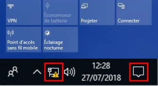
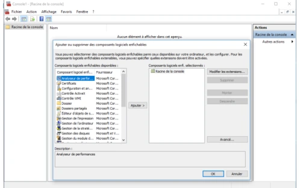
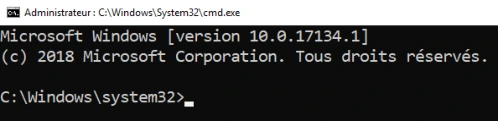
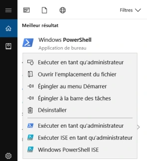
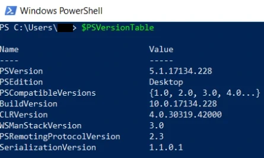
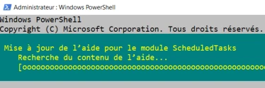

Module 03 — Interagir avec Windows 10¶
La transcription du support Drive et l’aide pédagogique sont séparées pour rendre leur provenance explicite.
SOURCE DRIVE · TRANSCRIPTION DU SUPPORT
Le contenu des documents du dossier TSSR est transcrit ci-dessous, page par page. Les textes et tableaux sont intégrés à la page Web. Aucun fichier PDF, aucune diapositive entière ni aucune reproduction de page n’est affiché. Seuls des croquis ou visuels isolés et vérifiés peuvent accompagner la transcription. Les versions et les consignes restent celles des supports de formation. Les compléments IA sont conservés dans leur onglet distinct.
Support · Module 03 - Support de cours · 20 pages transcrites
Interagir avec Windows 10
Objectifs
- Interagir avec le système.
- Découvrir l’interface graphique.
- Administrer le système avec la ligne de commande.
- Démarrer avec PowerShell.
Tour d’horizon
Système d’exploitation multi-utilisateur
- Le bureau personnalisable.
- Le menu Démarrer : clic gauche pour les tuiles ; clic droit pour les principaux raccourcis.
- Les bureaux supplémentaires.
- Timeline, ou historique des actions.
Système d’exploitation multitâche
- La barre des tâches et ses raccourcis.
- Windows + Tab.
- Le Gestionnaire des tâches.
Zone de notification
- Accès à la configuration réseau.
- Configuration rapide de la connectivité.
- Mode Tablette.
- « Tous les paramètres ».


Tour d’horizon graphique
- La zone de recherche indexée.
- Le Panneau de configuration.
- Les consoles MMC préconfigurées et personnalisées.
Démonstration
Le support annonce une démonstration de l’interface graphique.


TP
Tour d’horizon — la CLI
- Généralement, les OS disposent d’un ou plusieurs shells.
- Microsoft Windows : historiquement orienté GUI.
- Pour certaines actions spécifiques : CLI requise.
- Automatisation de tâches d’administration, scripts : CLI requise.
Les shells de Microsoft
command.compour les OS basés sur MS-DOS, avant Win9x.cmd.exepour les OS basés sur WinNT, Windows NT, 2000 et plus.- PowerShell nativement présent sur 2008 Server et suivant.
Tour d’horizon — la CLI
Outre l’interface graphique GUI, l’interface ligne de commande CLI :
- Le shell cmd.exe, command prompt, pour « aiguiser » le système de manière plus « pointue ».
- Évolution de command.com présent nativement avec MS-DOS.
- Interagir avec l’OS grâce aux commandes internes au shell et grâce à des commandes externes.
- Interpréter des fichiers batch, script.
Principe d’utilisation de la ligne de commande
C:\windows\system32> help
C:\windows\system32> help shutdown
Dans le premier exemple : prompt, commande seule. Dans le second : prompt, commande help, paramètre shutdown.


Tour d’horizon — la CLI
Principe d’utilisation de la ligne de commande
C:\windows\system32> shutdown /r /t 0
Prompt : C:\windows\system32> ; commande : shutdown ; option seule : /r ; option et son paramètre : /t 0.
- Le premier mot est toujours une commande.
- Une option est identifiable par un
/. - Chaque mot est séparé par un espace. L’espace est un caractère spécial interprété par le système.
- Le prompt est dynamique et personnalisable.
- Les quotes permettent de convertir les caractères spéciaux en caractères alphanumériques. Exemple du support :
'Mes Documents'. - Par défaut, le résultat d’une commande s’affiche à l’écran. Possibilité de rediriger le résultat dans un fichier à l’aide des simples chevrons
>et/ou des doubles chevrons>>.
help shutdown > aide.txt
Cet exemple enregistre l’aide détaillée de la commande shutdown dans le fichier aide.txt au lieu d’afficher l’aide détaillée à l’écran.
La syntaxe de l’aide
À l’aide ! La commande help [<commande>] est indispensable.
C:\windows\system32> help copy
COPY [/D] [/V] [/N] [/Y | /-Y] [/Z] [/L] [/A | /B ] source
[/A | /B] [+ source [/A | /B] [+ ...]] [cible [/A | /B]]
Comprendre la syntaxe d’une commande
| Notation | Description |
|---|---|
| Texte sans crochet ou accolades | Élément obligatoire que vous devez taper ou choisir une valeur. |
[texte entre crochet] |
Éléments facultatifs. |
{Texte entre accolades} |
Choisir un des éléments parmi ceux présents. |
Barre verticale ou « pipeline » \| |
Séparateur d’éléments. |
Points de suspension … |
Éléments qui peuvent être répétés et utilisés plusieurs fois. |
Exemple
Le support reprend la syntaxe COPY ci-dessus :
- COPY et source obligatoire.
- Possibilité de choisir 0, 1 ou des options seules : /D, /N, /A ou /B car il y a un |.
- Possibilité de choisir plusieurs sources.
- Pour plus de détails et exemples, consultez l’aide en ligne : https://docs.microsoft.com/fr-fr/windows-server/administration/windows-commands/windows-commands
Démonstration
Utilisation de la ligne de commande cmd.exe.
Travaux pratiques
Prise en main de la commande cmd.
Présentation de PowerShell
- Dernier shell Microsoft dans le contexte du support.
- Interpréteur de commandes.
- Langage de script.
- Orienté objet.
- S’appuie sur les bibliothèques .NET Framework.
Versions présentées
| Date | Version | Version de Windows associée | Autres versions disponibles indiquées |
|---|---|---|---|
| Novembre 2006 | PowerShell 1.0 | Windows Server 2008 | Windows XP SP2 et suivants ; Windows Server 2003 R2 SP1 et suivants ; Windows Vista SP1 et suivants. |
| Octobre 2009 | PowerShell 2.0 | Windows 7 ; Windows Server 2008 R2 | Windows XP SP3 ; Windows Server 2003 SP2 ; Windows Vista SP1 et suivants ; Windows Server 2008 SP1 et suivants. |
| Septembre 2012 | PowerShell 3.0, .NET 4.0 requis | Windows 8 ; Windows Server 2012 | Windows 7 SP1 ; Windows Server 2008 SP2 ; Windows Server 2008 R2 SP1. |
| Octobre 2013 | PowerShell 4.0, .NET 4.5 requis | Windows 8.1 ; Windows Server 2012 R2 | Windows 7 SP1 ; Windows Server 2008 R2 SP1 ; Windows Server 2012. |
| Septembre 2014 | PowerShell 5.0, .NET 4.5 requis | Windows 10 | Windows 8.1 ; Windows Server 2012 R2. |
Présentation de PowerShell
- La console texte native : possibilité d’ouvrir la console avec les droits administrateurs.
- Console graphique ISE, Integrated Scripting Environment, pour manipuler les scripts.
- Des outils tiers existent et rassemblent différentes consoles dans le même environnement : Windows Terminal et VSCode.
$PSVersionTable : variable tableau des versions de PowerShell
- PSVersion : version de PowerShell disponible sur le système d’exploitation.
- PSCompatibleVersions : rétrocompatibilité.




Présentation de PowerShell
Les commandes PowerShell : les cmdlets
- Constituées d’un verbe et d’un nom séparé par un tiret.
- Verbes les plus courants : Get, Set, Remove, Add, New.
- Les noms dépendent du contexte d’utilisation : LocalUser, NetAdapter, Alias, Variable…
Exemple de cmdlet
Get-Alias: affiche la liste des alias PowerShell.New-LocalUser: crée un nouvel utilisateur local dans l’ordinateur.
Les commandes PowerShell : les cmdlets
- Conçues pour remplir des tâches spécifiques.
- Ne sont pas sensibles à la casse.
- Comportent des paramètres, obligatoires ou optionnels…
- … avec des arguments, aucun ou plusieurs.
- Peuvent posséder un ou plusieurs alias.
Get-ChildItem -Path C:\users
Get-ChildItem : cmdlet ; -Path : paramètre ; C:\users : argument.
Présentation de PowerShell
| Touche | Description |
|---|---|
| Tab / Maj + Tab | Complétion d’un chemin, du nom de la commande, d’un paramètre et d’une valeur de paramètre. |
| Ctrl + Espace | Liste des différentes propositions de la complétion ; flèches directionnelles et Entrée pour choisir. |
| Échap | Efface la ligne de commande en cours de frappe. |
| Haut / Bas | Défilement de l’historique des commandes. |
| Gauche / Droite | Déplace le curseur sur la ligne de commande en cours. |
| Home / Fin | Déplace le curseur en début/fin de ligne. |
| Ctrl + C | Met fin à l’exécution de l’instruction courante. |
cls |
clear screen |
exit |
Ferme la console PowerShell. |
Démonstration
Découvrir PowerShell.
TP
Premiers pas avec PowerShell.
Aide de PowerShell
- Système d’aide intégré très complet pour obtenir des informations sur l’usage des commandes et obtenir des informations sur les concepts de PowerShell.
- PowerShell v1 et v2 : aide intégrée nativement.
- PowerShell v3 et plus : aide téléchargeable sur Internet, sur un serveur local, en anglais.
- Avantage : mettre à jour l’aide, obtenir les dernières sections actualisées.
Aide de PowerShell
Indispensable : mettre à jour l’aide
- Posséder les privilèges d’administration.
- Mise à jour par Internet :
Update-Help. -Forcepour outrepasser la limite d’une MAJ/j.- Mise à jour pour un système déconnecté : prérequis, posséder un dépôt local.
Update-Help -SourcePath \\chemin\vers\aide\PowerShell -UICulture en-US -Credential <login>
L’aide est accessible depuis
- La cmdlet
Get-Help <recherche>. Help <recherche>affiche l’aide page par page.Man <recherche>, alias de Help.<recherche> -?, disponible depuis toutes les cmdlets.
Exemples
Get-Help Disable-LocalUser: affiche l’aide de la cmdlet Disable-LocalUser.Help Help: affiche « l’aide de l’aide » page par page.Man about_Variables: affiche le manuel d’utilisation des variables PowerShell, page par page.Help about_*affiche la liste des concepts disponibles.


Aide de PowerShell
Astuces
Get-Help -Examples <recherche>: n’affiche que les exemples d’utilisation de la cmdlet.Get-Help -ShowWindow <recherche>: affiche l’aide complète dans une fenêtre séparée.Get-Help -Online <recherche>: affiche l’aide à jour détaillée disponible sur les serveurs Internet Microsoft, navigateur Internet requis.
Démonstration
Travaux pratiques
Manipuler l’aide de PowerShell.
Cmdlets de base et objets
La notion d’objet provient du monde de la programmation.
Exemples d’objets PowerShell : carte réseau, disque dur, utilisateur, fichier, etc.
Un objet comporte : - des propriétés, ses caractéristiques ; - des méthodes, ses actions.
Cmdlets de base et objets
Un objet PowerShell s’apparente à un objet du monde réel. Exemple : l’objet monBallon.
Objet qui possède des caractéristiques
- Une forme : sphérique, ovale, cubique…
- Des dimensions : diamètre en cm.
- Une masse : en kg.
- Etc.
Des actions sont réalisables sur cet objet
- Lancer.
- Gonfler.
- Faire rebondir.
- Etc.
Comment afficher des caractéristiques de l’objet monBallon ?
| Commande | Explication du support |
|---|---|
Get-monBallon |
Affiche certaines propriétés, les caractéristiques, de l’objet monBallon et leurs valeurs associées. Toutes les autres propriétés sont présentes mais cachées pour faciliter la lecture à l’écran. |
Get-monBallon \| select * |
Affiche toutes les propriétés de l’objet monBallon et leurs valeurs associées. |
Get-monBallon \| select diamètre,forme,couleur |
N’affiche seulement que les propriétés demandées et leurs valeurs associées. |
(Get-monBallon).description |
Affiche la propriété description de l’objet monBallon et sa valeur. Équivaut, dans le support, à Get-monBallon \| select description. |
Interagir avec un objet PowerShell
Get-Command
- Cmdlet la plus importante à connaître.
- Permet de découvrir toutes les commandes disponibles.
Get-Command, sans paramètres ni arguments, liste toutes les commandes de PowerShell !Get-Command Get-*affiche toutes les commandes commençant par le verbe Get.Get-Command *printer*affiche toutes les commandes contenant la chaîne de caractères printer.Get-Command New-*user*affiche toutes les cmdlets commençant par New ET contenant la chaîne de caractères user.- Une fois la commande trouvée, utilisez
Get-Helppour vous l’approprier.
Comment modifier / faire évoluer l’objet monBallon ?
Mon ballon de basket possède une valeur erronée pour la propriété Description, je veux modifier la valeur :
Set-monBallon -Nom "Basket" -Description "Ballon de Basket"
Je veux un nouveau ballon de rugby blanc :
New-monBallon -Nom "Rugby" -Forme "ovale" -Couleur "blanc" -Description "Ballon de rugby"
Je n’ai plus besoin de mon ballon de football :
Remove-monBallon -Nom "Football"
Démonstration
Cmdlets de base.
Travaux pratiques
Devenir autonome avec PowerShell.
Conclusion
- Différentes façons de piloter un système d’exploitation : interface graphique, ligne de commande et PowerShell.
- L’aide est précieuse pour s’en sortir.
- Utiliser les ressources.
- Modifier le système.
Référence du document : 1Yiz61GH6Zp921Q3rPxlmjyLIAUpoJUo- · SHA-256 156cc90dce4ad405…
Synthèse du Drive · Synthèse Module 3 - Interaction Windows 10, CLI, PowerShell & Excel V2 · 2 pages transcrites
Les synthèses Windows 10 de ce dossier sont rattachées au cours Systèmes clients.
Synthèse — Module 3 : Interagir avec Windows 10 (GUI, CLI, PowerShell) et outils collaboratifs (Excel) (V2)
1. Interfaces d’administration sous Windows 10
Windows 10 propose plusieurs interfaces pour l’administration et l’interaction avec le système : - Interface graphique (GUI) : Bureau, Panneau de configuration, Paramètres Windows, consoles MMC, mmc.exe. - Invite de commandes (cmd.exe) : shell historique hérité de MS-DOS pour l’exécution d’outils système et de scripts batch, .bat / .cmd. - PowerShell : shell moderne orienté objet basé sur .NET, permettant d’automatiser les tâches complexes d’administration.
2. Commandes d’administration CLI et PowerShell
Exemples de commandes essentielles pour interagir avec le système :
:: Commandes de base sous Invite de commande (cmd.exe)
help shutdown
shutdown /r /t 0
copy source.txt destination.txt
help copy > aide_copy.txt
# Commandes et cmdlets PowerShell
Get-Command
Get-Help Get-Process -Detailed
Get-Process | Where-Object {$_.CPU -gt 10}
Get-Service | Where-Object {$_.Status -eq "Running"}
3. Notions essentielles de Microsoft Excel
Le module couvre également les fonctionnalités de calcul et d’analyse dans Excel pour l’aide au pilotage informatique.
Notions essentielles de Microsoft Excel — tableau
| Catégorie | Fonctions principales | Exemple d’utilisation |
|---|---|---|
| Mathématiques | SOMME, ARRONDI, MOD, QUOTIENT | =SOMME(A1:A10) |
| Texte | CONCAT, GAUCHE, DROITE, NBCAR | =CONCAT(A2; " "; B2) |
| Recherche | RECHERCHEV, RECHERCHEH, COLONNE | =RECHERCHEV(A2; TableRef; 2; FAUX) |
| Logique | SI, ET, OU, SIERREUR | =SI(ET(A2>10; B2="OK"); "Valide"; "Rejeté") |
Référence du document : 1YVfR8rQcbF2RA_I23MsPVH7NZ4auK9h7bqBPOA7d4DE · SHA-256 4c9890b1b02f43e4…
Notes du Drive · module 3 et 4 system clients microsoft.txt · document texte
Notes textuelles présentes dans le Drive. Aucun support de cours illustré distinct n’est fourni pour ce document ; aucune illustration n’a été inventée ou attribuée au support.
Module 3 - Interagir avec Windows 10
Objectifs du module
Tour d'horizon de l'interface graphique
Démonstration - L'interface graphique
Enoncé du TP - Prise en main de l'interface graphique
Tour d'horizon la CLI
La syntaxe de l'aide
Démonstration - La ligne de commande cmd
Enoncé du TP - Prise en main de la cmd
Présentation de PowerShell
Principe d'utilisation de la ligne de commande PowerShell
Démonstration - Découvrir PowerShell
Enoncé du TP - Premiers pas avec PowerShell
L'aide de PowerShell
Démonstration - Découvrir l'aide de PowerShell
Enoncé du TP - Manipuler l'aide de PowerShell
Cmdlets de base et objets
Interagir avec un objet PowerShell
Démonstration - Cmdlets de base
Enoncé du TP - Devenir autonome avec PowerShell
Conclusion
Dans le cadre de notre module sur Interagir avec Windows 10, nous allons explorer l'interface graphique du système d'exploitation Windows 10, qui est un système d'exploitation multi-utilisateur.
Chaque utilisateur possède un profil dans lequel son bureau est personnalisable ainsi que son menu démarré. Nous avons la possibilité d'ajouter des bureaux supplémentaires pour agrandir notre espace de travail. De plus, nous bénéficions de la fonctionnalité Timeline, qui existe depuis la build 18.03, nous proposant un historique de nos tâches.
Fonctionnalités multi-tâches
Windows 10 est également un système d'exploitation multi-tâches, ce qui signifie que nous pouvons utiliser plusieurs applications en même temps. Nous pouvons facilement basculer de l'une à l'autre depuis la barre des tâches ou à l'aide de la combinaison de touches Windows + Tabulation. Pour afficher le détail du bon fonctionnement des applications, nous utilisons le gestionnaire des tâches.
Zone de notification
La zone de notification nous apporte des informations en temps réel et des raccourcis vers certains programmes qui tournent en arrière-plan. Un élément intéressant de cette zone est d'observer, d'un simple coup d'œil, l'état de la connexion réseau ainsi qu'un raccourci pour la configurer, ce qui est pratique pour la mobilité. Les notifications du système apparaissent dans cette zone.
Zone de recherche
Nous avons aussi accès à une zone de recherche très pratique. Il est conseillé de prendre le réflexe de l'utiliser pour accéder à n'importe quel emplacement du système. Étant indexée, elle propose des suggestions automatiques, ce qui nous permet de gagner du temps. Par exemple, en tapant "panneau", le système nous propose rapidement d'accéder au panneau de configuration.
Gestion des paramètres du système
Le célèbre panneau de configuration, que nous ne présentons plus, nous permet de lancer divers éléments grâce au fichier avec l'extension .cpl disponible dans le dossier Windows System32. Nous utilisons également les consoles MMC pour Microsoft Management Console. Ces derniers sont des outils essentiels pour les techniciens, même s'ils sont peut-être moins connus.
Il est important de prendre l'habitude d'utiliser ces consoles. Nous avons à notre disposition des consoles préconfigurées, disponibles en faisant un clic droit sur le menu démarrer, ou grâce au fichier .msc disponible dans le dossier Windows System32. De plus, nous pouvons lancer une console vierge et la personnaliser en y ajoutant nos propres composants logiciels enfichables.
En conclusion, nous avons exploré les différentes fonctionnalités et interfaces graphiques de Windows 10, ce qui nous permet de mieux interagir avec le système d'exploitation dans notre rôle de techniciens.
Dans cet extrait, nous étudions l'interface graphique de Windows 10.
L'interface graphique de Windows 10
Nous commençons par observer le bureau, qui est la première chose que nous voyons après la connexion. En bas à gauche, nous avons le menu démarré, où l'on trouve les célèbres tuiles qui nous permettent d'accéder rapidement aux applications. En bas à droite, se trouve la zone de notification, essentielle pour recevoir des alertes et des informations sur notre système.
Les fonctionnalités du système
Nous avons la possibilité d'activer diverses fonctionnalités de notre système. En consultant 'Tous les paramètres', nous accédons à une console qui nous permet de modifier plusieurs aspects du système. Cette interface tend à remplacer le panneau de configuration traditionnel, offrant une approche plus moderne et intuitive.
À travers la zone de recherche indexée, nous sommes en mesure de rechercher des éléments spécifiques de manière efficace. Par exemple, en tapant 'panneau', nous pouvons accéder directement au panneau de configuration. Ce dernier nous permet d'explorer différentes catégories pour effectuer des réglages sur notre système.
Explorer la timeline
Nous avons également accès à la timeline, qui nous donne un historique des actions effectuées sur notre système. Bien qu'elle soit moins utilisée, elle peut s'avérer utile pour retrouver des opérations passées. De plus, la timeline nous permet de créer de nouveaux bureaux, élargissant ainsi notre environnement de travail.
Accéder aux consoles de gestion
En cliquant droit sur le menu démarré, nous pouvons accéder à des consoles de gestion préconfigurées telles que la gestion des disques ou le gestionnaire de périphériques. Prenons un instant pour lancer la console de gestion de l'ordinateur, qui est assez complète et regroupe plusieurs outils essentiels, tels que l'observateur d'événements et les utilisateurs et groupes locaux.
Créer notre propre console personnalisée
Ce qui est captivant, c'est que nous avons la possibilité de créer nos propres consoles. Pour ce faire, nous pouvons taper 'MMC' dans la zone de recherche indexée. Cela nous permettra de créer une console sur mesure, où nous pourrons ajouter les composants logiciels enfichables selon nos besoins. Nous avons la possibilité d'ajouter ou de supprimer des composants.
Nous allons ajouter des éléments comme la gestion des disques de cet ordinateur, le pare-feu local, et les utilisateurs et groupes.
Tous les éléments que nous avons sélectionnés apparaîtront dans notre console personnalisée. Nous pouvons ainsi configurer notre système à notre manière. En fin de processus, nous avons la possibilité de sauvegarder notre console. En sélectionnant 'Fichier', puis 'Enregistrer sous', nous pourrons la positionner sur notre bureau. Pour notre exemple, nous l'appellerons 'ma console'. Une fois enregistrée, elle sera présente sur notre bureau.
Nous avons exploré les fonctionnalités principales de l'interface graphique de Windows 10 et la création de consoles personnalisées pour gérer efficacement notre système.
Dans cet atelier, nous allons être amenés à interagir avec l'interface graphique pour commencer à personnaliser le système d'exploitation.
Nous allons découvrir les différentes options et paramètres qui nous permettront de configurer notre environnement de travail afin de l'adapter à nos besoins spécifiques. Cette étape est cruciale pour le bon fonctionnement de notre système.
Objectifs de l'atelier
Au cours de cet atelier, nous allons également nous familiariser avec les consoles MMC (Microsoft Management Console). Ces consoles sont des outils puissants qui nous permettront de gérer plusieurs aspects de Windows 10.
Utilisation de la console MMC
Pour commencer à utiliser la console MMC, nous allons suivre les étapes suivantes :
mmc.exe
Cette commande va lancer la console MMC, qui nous donnera accès à une interface où nous pourrons ajouter des outils et configurer différentes options.
Personnalisation de l'interface
En utilisant la console MMC, nous aurons la possibilité de personnaliser notre interface en fonction de notre utilisation quotidienne. Nous pourrons ajouter des modules spécifiques qui nous faciliteront la gestion de notre système.
À l'issue de cet atelier, nous aurons acquis des compétences essentielles pour interagir avec l'interface graphique de Windows 10 et personnaliser notre environnement de travail. Cela est fondamental pour nous, en tant que futurs techniciens, afin de nous préparer à des missions concrètes en entreprise.
Dans cet article, nous allons explorer la ligne de commande (CLI) pour interagir avec Windows 10. Nous utilisons habituellement l'interface graphique, mais la CLI est aussi un outil puissant.';
Pourquoi utiliser la CLI ?
Nous avons souvent recours à l'interface graphique pour administrer Windows, mais il existe des situations où l'interface graphique peut nous limiter. Parfois, nous devons passer par la ligne de commande pour effectuer des tâches spécifiques que la GUI ne permet pas.
Les shells disponibles dans Windows 10
Dans Windows 10, nous avons principalement deux shells à notre disposition : cmd.exe et powershell. Le premier, cmd.exe, est un shell historique et l'évolution de ceux présents avec MS-DOS.
Commandes internes et externes
Nous allons découvrir que cmd.exe possède des commandes internes spécifiques ainsi que la possibilité d'exécuter des commandes externes qui sont des programmes Windows. Nous pouvons également créer des scripts en enregistrant des commandes dans un fichier texte que le système peut lire et exécuter.
Utilisation de la ligne de commande
Avec la ligne de commande, nous avons d'abord le prompt, qui nous indique notre position dans l'arborescence du système. Nous pouvons taper des commandes après le prompt, telles que help, et ces commandes peuvent être suivies de paramètres ou d'options.
Les règles de base de la CLI
Il est crucial de se rappeler que le premier mot ici est toujours une commande. Si nous ne respectons pas cette structure, le système renvoie une erreur. Les éléments de commande et leurs paramètres doivent toujours être séparés par des espaces, car l'espace est un caractère spécial utilisé pour délimiter les différentes parties de la commande.
Canaliser les résultats des commandes
Une commande a pour but de donner un ordre au système d'exploitation, qui utilise alors les ressources matérielles pour répondre à cet ordre. Par défaut, le résultat de la commande s'affiche sur l'écran, mais nous avons aussi la possibilité de diriger ce résultat vers un fichier à l'aide du chevron.
Exemples de commandes
echo Hello World
Dans cet exemple, nous utilisons la commande echo pour afficher "Hello World" à l'écran.
En conclusion, la CLI est un outil incontournable pour les techniciens qui doivent parfois aller au-delà des limites de l'interface graphique. Apprenez à maîtriser ces commandes, car elles renferment une puissance et une flexibilité incomparables lors de l'administration de systèmes Windows 10.
Dans ce module, nous allons explorer la notion cruciale de la syntaxe de la commande dans Windows 10.
Nous allons comprendre comment chaque commande donnée au système nécessite une syntaxe précise pour être exécutée correctement. Si cette syntaxe est incorrecte, le système ne parvient pas à interpréter notre ordre et nous retourne une erreur. Cela souligne l'importance de bien lire l'aide disponible pour chaque commande.
Utilisation des commandes
Nous devons connaître les codes de syntaxe qui se trouvent dans l'aide pour bien utiliser les commandes. En général, tout texte qui n'est pas entre crochets ou accolades est obligatoire. En revanche, ce qui se trouve entre crochets ou accolades est facultatif.
Comprendre les éléments de syntaxe
La barre verticale, ou pipe, joue un rôle clé en permettant de séparer des éléments dans la syntaxe. Les points de suspension indiquent que nous pouvons répéter un élément N fois.
Exemple de la commande COPY
COPY source destination [/options]En étudiant la syntaxe de la commande COPY, nous constatons que le mot COPY ainsi que la "source" et la "destination" sont des paramètres obligatoires. Si nous ne les incluons pas, la commande échouera.
Options disponibles
Nous apercevons également que des options peuvent être ajoutées à cette commande. Ces options sont indiquées par un slash et sont optionnelles, car elles sont entourées de crochets. Par exemple, nous pouvons utiliser des options comme /A ou /B, mais attention, il ne sera pas possible de les cumuler en même temps.
En somme, la commande COPY nous permet de copier des fichiers d'une source vers une destination. Pour son bon fonctionnement, il est impératif de toujours spécifier au moins une source, et nous avons la possibilité d'ajouter plusieurs sources, comme indiqué par les points de suspension dans la syntaxe.
Dans ce module, nous explorons comment interagir avec Windows 10 à travers la ligne de commande, cmd.exe.
Introduction à cmd.exe
Nous avons plusieurs solutions pour lancer la ligne de commande cmd.exe. La méthode la plus rapide consiste à taper "cmd" dans la barre de recherche. Cela fait apparaître un écran de commande que nous pouvons lancer. À ce stade, nous découvrons une boîte noire dans laquelle nous avons la possibilité de taper des commandes. Lorsqu'on accède à ce shell, nous avons la possibilité de personnaliser notre console en modifiant les propriétés, notamment les options de police, la taille et la couleur. Nous pouvons choisir d'opter pour un texte noir sur un arrière-plan clair, ce qui nous aide à mieux visualiser les informations.
Les commandes de base
Pour commencer avec les commandes, nous pouvons taper la commande cls pour effacer tout ce qui est affiché à l'écran. De plus, en maintenant la touche "Contrôle" tout en scrollant avec notre souris, nous avons la possibilité d'augmenter un peu la taille de la fenêtre, ce qui peut nous être pratique. Nous pouvons également lancer des applications externes grâce à cette ligne de commandes. Par exemple, nous pouvons taper la commande suivante pour ouvrir le Bloc-notes :
notepadDe plus, nous avons la possibilité de lancer un élément du panneau de configuration en utilisant la commande suivante :
timedate.cpl
Cela nous permet d'accéder à la gestion de l'heure et de la date de notre système.
Commandes internes et aide
Nous pouvons aussi exécuter des commandes internes de cmd.exe. Une des commandes les plus utiles, que nous devons connaître, est la commande help. En l'exécutant, nous envoyons cet ordre au noyau, qui nous affiche le résultat à l'écran. La commande help dresse la liste de toutes les commandes disponibles dans le shell. Nous pouvons faire défiler l'affichage pour voir chaque commande ainsi qu'une brève description. Si nous souhaitons obtenir de l'aide supplémentaire concernant une commande spécifique, nous avons la possibilité de taper help, suivie d'un espace et du nom de la commande. Par exemple, pour la commande copy :
help copyNous découvrons alors un résumé du rôle de la commande, sa syntaxe et un descriptif des paramètres et des options.
Privilèges d'administration
Cependant, si nous souhaitons modifier la configuration du système, il est nécessaire de posséder des privilèges d'administration. Un simple utilisateur ne peut pas apporter de modifications pour des raisons de sécurité et de fiabilité. Par conséquent, nous devons lancer le shell cmd en tant qu'administrateur. Pour ce faire, nous fermons nos fenêtres et relançons le shell cmd.exe avec les droits administratifs. Lorsque nous l'exécutons, nous voyons l'invite de commande, et nous devons répondre à une demande de confirmation : "Voulez-vous autoriser cette application à apporter des modifications à votre appareil ?".
En somme, cmd.exe est un puissant outil qui nous permet d'interagir directement avec les ressources de notre ordinateur et de réaliser diverses tâches via la ligne de commande. Nous avons également appris que pour effectuer des actions modifiant le système, une élévation de privilèges est indispensable.
Dans cet atelier, nous allons nous familiariser avec la ligne de commande CMD.
Le but de cet atelier est d'utiliser l'aide disponible dans CMD. Il suffit de lire cette aide pour s'en sortir et comprendre comment utiliser efficacement les commandes. Nous allons également faire des tests avant d'être sûrs d'avoir la commande finale. Il est tout à fait normal de faire des erreurs durant cet atelier, car cela fait partie de notre apprentissage. À ce stade du cours, nous découvrons la ligne de commande, et il est essentiel de comprendre que la pratique est la clé de notre maîtrise.
Utilisation de l’aide
Nous allons apprendre à utiliser la commande cmd pour accéder à l’aide de n’importe quelle commande. En utilisant l’option /?, nous pourrons obtenir des informations détaillées sur chaque commande. Voici un exemple de comment utiliser l'aide :
command /?
Pratique et tests
Durant cet atelier, nous effectuerons divers tests pour appliquer ce que nous avons appris. La répétition des essais et des erreurs nous aidera à progresser. Nous nous aiderons également les uns les autres pour résoudre les difficultés rencontrées. N’hésitez pas à poser des questions si quelque chose n’est pas clair.
En conclusion, la ligne de commande est un outil puissant que nous allons utiliser dans d'autres modules. Au fur et à mesure que nous découvrirons davantage de fonctionnalités, notre confiance et notre compétence dans l'utilisation de CMD vont augmenter. Nous serons alors mieux préparés pour nos futurs défis dans la gestion des systèmes et réseaux.
Dans ce module, nous nous intéressons à PowerShell, le dernier shell développé par Microsoft. PowerShell est un interpréteur de commandes qui permet de créer et de lancer des scripts.
Particularités de PowerShell
Nous constatons que PowerShell est orienté objet, comme certains langages de développement. Il s'appuie sur des bibliothèques .NET Framework, qui permettent de créer des scripts plus ou moins élaborés en fonction de nos besoins, tout en offrant des fenêtres graphiques.
Historique de PowerShell
Nous savons que la première version de PowerShell était présente nativement sur les systèmes Windows Server 2008 à partir de fin 2006. Cependant, il était également possible de l'installer sur Windows XP, Vista et 2003 Server, à condition de respecter certains prérequis.
Évolution des versions
PowerShell a beaucoup évolué au fil du temps avec plusieurs versions qui ont apporté leur lot de commandes, d'améliorations, de nouvelles fonctionnalités et de sécurité d'utilisation. À l'heure actuelle, nous en sommes à la version 5.1, qui est stabilisée depuis plusieurs années et qui est très appréciée des techniciens et administrateurs Windows.
Accès à PowerShell
Nous pouvons accéder à Shell PowerShell par plusieurs moyens. Nous pouvons utiliser la commande via la console PowerShell, qui est présente nativement dans le système, ou bien passer par la console graphique ISE (Integrated Scripting Environment), qui est plus orientée vers le scripting.
Outils complémentaires
De plus, nous avons la possibilité d'utiliser des outils tiers pour manipuler PowerShell, tels que le Windows Terminal, disponible sur le Windows Store ou sur Git. Nous pouvons également utiliser Visual Studio Code, qui est une alternative à l'ISE.
Lancement des outils
Dans tous les cas, nous pouvons retrouver ces outils en utilisant la zone de recherche de Windows et avons la possibilité de les lancer en tant qu'administrateur si nous avons besoin de modifier le système.
En résumé, PowerShell est un outil puissant pour les administrateurs système, avec de nombreuses fonctionnalités qui facilitent la gestion des systèmes Windows.
Dans ce module, nous allons apprendre à utiliser la ligne de commande PowerShell, un outil puissant pour interagir avec Windows 10.
Vérification de la version de PowerShell
Nous devons d'abord vérifier la version actuelle de PowerShell qui est prise en charge sur notre poste. Pour cela, nous faisons appel à la variable $PSVersionTable. Cette variable contient plusieurs informations, dont la version de PowerShell. Il est crucial de connaître cette version, surtout dans un contexte professionnel où nous devons gérer des parcs de machines hétérogènes, incluant des clients Windows 10, Windows 7 et des serveurs tels que 2012 R2, 2016, 2019. Nous allons exécuter la commande suivante pour afficher ces informations :
$PSVersionTableImportance de la rétrocompatibilité
Il est aussi important de prendre en compte la rétrocompatibilité lorsque nous écrivons des scripts. Par exemple, un script élaboré sur Windows 10 utilisant PowerShell version 5.1 pourrait ne pas fonctionner sur des systèmes d'exploitation plus anciens. La variable $PSVersionTable nous fournit également des informations sur la compatibilité, en particulier la valeur PSCompatibleVersion. Cette valeur indique quelle version de PowerShell fonctionne dans notre console, ce qui est essentiel pour éviter les erreurs lors de l'exécution de scripts sur différentes versions du système d'exploitation.
Commandlets : structure et utilisation
Nous allons également explorer les commandlets, qui sont les commandes que nous utilisons dans PowerShell. Ces commandlets ont une structure intuitive, composée d'un verbe et d'un nom, séparés par un tiret. Les verbes courants incluent GET, SET, REMOVE, ADD et NEW. Par exemple, si nous souhaitons afficher la liste des alias PowerShell, nous pouvons utiliser la commande suivante :
GET ALIAS
De même, pour découvrir les verbes utilisables, nous tapons :
GET VERB
Chaque commandlet est conçu pour exécuter une tâche spécifique et il est important de noter qu'elles ne sont pas sensibles à la casse.
Utilisation des paramètres avec les commandlets
Les commandlets peuvent également posséder des paramètres, qui sont représentés par un tiret suivi d'un mot. Par exemple, la commandlet GET CHILD ITEM possède un paramètre nommé -Path. Certains de ces paramètres fonctionnent seuls, tandis que d'autres nécessitent des arguments. Dans ce cas, -Path nécessite un argument, comme suit :
GET CHILD ITEM -Path C://users
En résumé, nous avons exploré les concepts fondamentaux de PowerShell, de la vérification de la version avec $PSVersionTable à la structure des commandlets et leur utilisation avec des paramètres. Ces connaissances seront essentielles pour interagir efficacement avec Windows 10 et d'autres systèmes dans un environnement professionnel.
Dans ce module, nous allons découvrir PowerShell, un outil puissant pour interagir avec notre système Windows 10.
Présentation de PowerShell
PowerShell est un interpréteur de commandes et un langage de script développé par Microsoft. Lorsqu'on tape "PowerShell" dans la barre de recherche, nous avons plusieurs résultats : PowerShell et PowerShell ISE (Integrated Scripting Environment), tant en version 64 bits qu'en version 32 bits, le x86 nous l'indiquant.
Lancer PowerShell
Nous pouvons lancer PowerShell avec un simple niveau de privilège ou bien en tant qu'administrateur. Lançons la console PowerShell et modifions la taille de la fenêtre ainsi que la taille de la police en maintenant la touche contrôle et en scrollant avec notre souris. Affichons ensuite la version de PowerShell disponible sur notre système avec le contenu de la variable $PSVersion.
$PSVersionEn utilisant la touche tabulation, nous pouvons compléter notre commande rapidement tout en évitant les fautes de frappe. En appuyant sur "Entrée", nous constatons que notre système dispose de la version 5.1 de PowerShell.
Lancer PowerShell ISE
Lançons maintenant la console ISE. L'application se lance et au centre, nous voyons la console PowerShell. À droite, la liste des commandes cmdlets s'affiche. Nous pouvons afficher le volet script ainsi qu'une ligne de commande. Cette fenêtre de script nous permet de rédiger notre script et de le tester dans la console en dessous en pressant la touche F5.
$PSVersionTableEn appuyant sur F5, nous avons le résultat et vérifions que nous avons bien la même version de PowerShell disponible sur notre système. Pour ma part, pour une meilleure vision et utilisation, je vais m'en tenir à la console simple PowerShell.
Utilisation des cmdlets
Affichons à l'écran la liste des verbes que nous pouvons utiliser dans nos cmdlets. Pour cela, nous pouvons taper la commande suivante :
get-verbCeci nous donne une liste de tous les verbes disponibles. Si nous souhaitons lister toutes les commandes disponibles, nous devons taper :
get-commandNous découvrons alors qu'il y a beaucoup de commandes. Trois familles de commandes sont regroupées dans le système : les cmdlets, des fonctions et des aliases, et ces familles sont classées dans la colonne "Commande Type".
Filtrer les commandes
Si nous ne souhaitons afficher que les cmdlets, nous devons taper :
get-command -commandtype cmdletNous pouvons également utiliser la tabulation pour les options lors de cette action. Cela nous permet de sélectionner facilement un argument cmdlet, et seules les cmdlets s'afficheront à l'écran.
Pour résumer, nous avons découvert PowerShell, comment l'utiliser et comment explorer ses cmdlets. Cet outil nous offre une manière efficace d'interagir avec notre système Windows 10.
Dans cet atelier, nous allons découvrir les bases de l'utilisation de PowerShell.
Nous allons pouvoir interagir de manière simple avec le système. Ce premier atelier PowerShell est assez court, car encore une fois, nous ne pouvons pas pratiquer longtemps sans l'aide. Nous allons aborder ici les commandes fondamentales qui nous seront utiles dans notre travail quotidien.
Les bases de powerShell
Nous allons commencer par ouvrir PowerShell. Pour cela, nous pouvons rechercher "PowerShell" dans le menu démarrer et cliquer sur l'application. Une fois ouvert, nous serons accueillis par une interface semblable à celle de l'invite de commandes.
Exécution de commandes simples
Nous allons tester quelques commandes de base pour nous familiariser avec cet outil. Par exemple, utilisons la commande Get-Help pour obtenir de l'aide sur une commande spécifique.
Get-Help Get-ProcessEnsuite, nous pourrons afficher les processus en cours d'exécution sur notre machine avec la commande suivante :
Get-ProcessApplication pratique
À présent, nous avons la possibilité d'expérimenter avec des commandes plus complexes. En jouant avec les paramètres, nous serons en mesure de filtrer les résultats ou d'afficher des informations spécifiques. Par exemple, pour trouver un processus par son nom, nous pourrions utiliser :
Get-Process -Name "notepad"Cette commande nous aidera à mieux comprendre comment les processus sont gérés sous Windows et à quel point il est facile d'interagir avec le système à l'aide de PowerShell.
En conclusion, nous avons fait nos premiers pas dans PowerShell. Grâce à cet atelier, nous avons acquis des connaissances fondamentales qui nous permettront d’explorer les fonctionnalités avancées lors de nos prochaines sessions. A nous de jouer !
Dans ce module, nous allons explorer l'aide de PowerShell.
L'aide de PowerShell : aperçu général
Comme la plupart des shell existants, PowerShell propose de l'aide pour l'utilisation et la compréhension de ce langage. L'aide de PowerShell ne se limite pas simplement à l'usage des commandes, mais elle inclut également des concepts fondamentaux afin de mieux appréhender son fonctionnement. On peut percevoir PowerShell comme un manuel d'utilisation qui est structuré en plusieurs chapitres que nous pouvons appeler et consulter lorsque nous en avons besoin.
Évolution de l'aide à partir de PowerShell version 3
Avec la version 1 et la version 2 de PowerShell, l'aide était intégrée nativement. Cependant, avec la version 3 et les versions ultérieures, Microsoft a changé son approche. Désormais, l'aide n'est plus native et il est nécessaire de télécharger les sections d'aide pour bénéficier des informations actualisées. Il est important de noter que seules les sections d'aide en anglais sont maintenues à jour.
Importance de mettre à jour l'aide
Il est donc primordial de mettre à jour l'aide dès que nous commençons à utiliser PowerShell. La mise à jour de l'aide nécessite des privilèges d'administration, car cela modifie le système. La commande pour télécharger l'aide est très simple et intuitive :
Update-HelpCette commande permet de télécharger les sections d'aide depuis Internet, plus précisément depuis les dépôts officiels de Microsoft. Nous avons également la possibilité de télécharger l'aide depuis un dépôt privé ou local préinstallé, par exemple, sur un serveur dans notre entreprise.
Utiliser l'aide de PowerShell
Une fois que l'aide a été mise à jour, comment pouvons-nous l'utiliser ? Nous pouvons utiliser la commande suivante pour avoir un affichage complet :
Get-HelpOu, pour un affichage page par page, nous utilisons simplement :
HelpIl est également possible d'utiliser l'alias de la commande Unix, man, pour afficher l'aide :
man
Si nous souhaitons obtenir des informations sur une commande spécifique, comme Disable-LocalUser, nous tapons :
Get-Help Disable-LocalUserSi nous ne savons pas ce qu'est une variable, nous pouvons demander plus d'informations avec :
man about_Variable
Toutes les sections d'aide qui commencent par about_ offrent des explications sur diverses notions de PowerShell.
Astuces pour bien utiliser l'aide
Pour optimiser notre expérience avec l'aide, il existe quelques astuces utiles. Par exemple, si nous connaissons déjà une commande mais que nous avons un doute sur son utilisation, l'option -Example de Get-Help nous permettra d'afficher des exemples pertinents. De plus, l'option -ShowWindow est très pratique, car elle affiche l'aide complète dans une fenêtre séparée avec une barre de recherche pour explorer des options spécifiques.
Enfin, nous pouvons consulter une section d'aide en ligne en utilisant l'option -Online, ce qui nous assure que nous avons accès à la version la plus à jour de l'aide.
En résumé, PowerShell nous offre une aide detaille et accessible pour l'apprentissage et la maîtrise de cet outil puissant, surtout si nous veillons à maintenir cette aide à jour.
Dans cette section, nous allons découvrir comment utiliser la commande update-help dans PowerShell.
Tout d'abord, essayons de nous renseigner sur la commande update-help pour savoir comment l'utiliser. Nous allons lancer une console PowerShell, régler la taille de la fenêtre, et nous pourrons ensuite taper la commande get-help de la commande update-help. Voici l'aide de la commande update-help.
Dans la remarque, nous trouvons la phrase suivante : « get-help ne parvient pas à trouver les fichiers d'aide de cette applet de commandes sur cet ordinateur ». C'est tout à fait normal, car nous sommes avec la version 5.1 de PowerShell. Il faut mettre à jour l'aide de PowerShell.
Mise à jour de l'aide de PowerShell
Nous avons donc deux possibilités pour mettre à jour l'aide de PowerShell, soit depuis les dépôts Microsoft officiels via Internet, soit depuis un dépôt local. Dans notre cas, nous allons passer par l'aide depuis les serveurs de Microsoft.
Pour cela, nous aurons besoin de deux choses. Premièrement, comme nous allons mettre à jour l'aide sur un poste, nous devons ouvrir une console en tant qu'administrateur. Deuxièmement, notre VM doit avoir accès à Internet. Actuellement, elle est branchée sur le switch Hostonly, ce qui ne lui permet pas d'atteindre Internet. Nous allons donc la brancher sur le switch Bridge afin qu'elle puisse détecter le réseau physique.
Configuration de la machine virtuelle
Première chose, lançons une commande PowerShell en tant qu'administrateur. Oui, nous allons modifier le système grâce à cette console. Deuxièmement, branchons notre VM sur le réseau physique. Nous éditons la configuration de notre VM au niveau de la carte réseau et nous la connectons au switch virtuel Bridge.
Une fois cette procédure faite, le système découvre un nouveau réseau. Nous acceptons que notre VM soit visible sur ce réseau, ce qui nous permet de terminer la configuration de l'environnement utilisateur demo user, puisqu'elle a détecté Internet. Une page va se lancer pour continuer cette configuration ; nous choisissons de demander à être rappelé plus tard pour le moment.
Exécution de la commande pour mettre à jour l'aide
Nous allons maintenant pouvoir mettre à jour notre système, et notamment les sections d'aide de PowerShell. La commande est la suivante :
Update-HelpUn bandeau s'affiche et nous indique que la mise à jour est en cours. Cela peut prendre plusieurs minutes en fonction de notre système et de la bande passante de notre réseau.
Gestion des messages d'erreur
Dans certains cas, nous pouvons avoir des messages d'erreur suite à la mise à jour. Il est important de les prendre comme des avertissements. Certains modules ne sont pas présents sur notre Windows 10, ce qui fait que la mise à jour n'a pas pu être effectuée.
Maintenant que l'aide est à jour, retentons d'afficher l'aide de la commande update-help. La section d'aide est désormais beaucoup plus fournie et disponible en anglais.
Consultation des exemples de la commande
Pour consulter les exemples, nous pouvons utiliser la commande suivante :
Get-Help Update-Help -ExamplesVoici quelques exemples disponibles pour cette commande : Exemple 1, mettre à jour tous les modules avec Update-Help. Exemple 2, mettre à jour la section d'aide d'un module spécifique. Exemple 3, aller chercher des sections d'aide dans d'autres langues.
Affichage de l'aide dans une fenêtre séparée
Nous avons également la possibilité d'afficher la section d'aide dans une fenêtre séparée. La commande à utiliser est la suivante :
Update-Help -ShowWindowLa page entière d'aide s'affiche dans une fenêtre séparée. Nous pouvons redimensionner cette fenêtre et faire défiler les options. Nous avons aussi la possibilité d'utiliser un champ de recherche pour trouver plus rapidement du texte à l'intérieur de cette fenêtre.
En résumé, nous avons vu comment utiliser update-help pour mettre à jour l'aide dans PowerShell, comment gérer les erreurs potentielles et comment consulter les exemples et l'aide dans une fenêtre séparée.
Dans cet atelier, nous serons amenés à utiliser et naviguer dans l'aide pour retrouver des informations.
Bien évidemment, nous commencerons par mettre à jour cette aide, puis nous découvrirons comment nous l'utilisons et naviguons à l'intérieur. N'oublions pas qu'il existe de l'aide pour deux domaines. L'aide pour utiliser les commandes LED en général, et l'aide pour découvrir des concepts de PowerShell.
Mettre à jour l'aide de PowerShell
Pour débuter, nous devons mettre à jour l'aide de PowerShell pour bénéficier des dernières fonctionnalités. Nous utiliserons la commande suivante :
Update-HelpNaviguer dans l'aide de PowerShell
Une fois que nous avons mis à jour l'aide, nous pouvons naviguer dans différents modules et cmdlets pour trouver les informations dont nous avons besoin. La commande suivante nous permet d'accéder aux différents modules disponibles :
Get-Module -ListAvailablePuis, pour voir l'aide d'une cmdlet spécifique, nous pouvons utiliser :
Get-Help <NomDeLaCmdlet>En remplacant par le nom de la commande dont nous voulons voir l'aide.
Pour résumer, il est essentiel de se familiariser avec l'aide intégrée de PowerShell afin de l'utiliser efficacement. Nous avons appris à mettre à jour cette aide, à naviguer parmi les modules et à obtenir des informations spécifiques sur les cmdlets.
Dans PowerShell, nous devons comprendre que c'est un langage d'administration orienté objet. Cela signifie que nous interagissons avec des éléments du système appelés objets.
Tout d'abord, il est important de savoir que la notion d'objet n'est pas nouvelle en informatique et provient de certains langages de programmation comme le PHP ou le C#. Un objet PowerShell est un élément du système que nous pouvons manipuler, configurer, comme par exemple un utilisateur, un fichier ou une carte réseau.
Propriétés et méthodes des objets
Chacun de ces objets possède des propriétés, que nous pouvons plus simplement appeler des caractéristiques, et des méthodes ou des actions que nous pouvons mener sur ces objets. Pour mieux comprendre cette notion d'objet, nous pouvons comparer un objet PowerShell à un objet du monde de tous les jours, l'objet « mon ballon ».
Un ballon est un objet qui possède des caractéristiques. Par exemple, il possède une forme ovale pour un ballon de rugby ou sphérique pour un ballon de basket, des dimensions, une masse, bref, tout un tas de caractéristiques que nous appelons « propriétés » pour un objet PowerShell.
Nous pouvons également mener des actions sur « mon ballon », comme par exemple le lancer ou le gonfler. Ces actions sont ce que nous appelons des méthodes pour un objet PowerShell.
Exemples de cmdlets
Pour illustrer nos propos, nous allons voir quelques cmdlets de base. Voici un exemple simple qui nous montre comment obtenir la liste des processus en cours d'exécution :
Get-ProcessNous pouvons également obtenir des informations sur un objet spécifique. Par exemple, pour obtenir des détails sur le processus "notepad", nous utiliserons la commande suivante :
Get-Process -Name notepadEn conclusion, nous voyons que PowerShell nous permet de travailler avec des objets grâce à des cmdlets qui nous donnent la possibilité d'interagir facilement avec ces objets en utilisant leurs propriétés et méthodes.
Dans cette section, nous allons explorer comment interagir avec un objet PowerShell à travers le système d'exploitation Windows 10.
Comprendre les objets dans PowerShell
Nous avons la capacité de manipuler des objets au sein de PowerShell, comme un ballon dans notre exemple. En effet, nous pouvons avoir plusieurs objets, tels que des utilisateurs, des fichiers ou des imprimantes. Ainsi, pour afficher les caractéristiques de l'objet « mon ballon », nous pouvons utiliser la commande suivante :
let get-monballonCette commande affichera les propriétés majeures de l'objet sans montrer toutes les propriétés existantes.
Afficher toutes les propriétés
Si nous souhaitons obtenir une vue complète des propriétés de l’objet, nous avons la possibilité d'utiliser la commande suivante :
let get-monballon | select étoileL'étoile représente toutes les propriétés. Par ailleurs, nous pouvons filtrer les propriétés que nous voulons voir. Par exemple, pour afficher uniquement le diamètre, la forme et la couleur de notre ballon, nous pouvons utiliser :
let get-monballon | select diamètre, forme, couleurInteragir avec des objets en utilisant les commandes let
Pour interagir avec les objets dans PowerShell, il existe plusieurs commandes let que nous devons connaître. La commande clé pour cela est :
let get-commandeCette commande nous fournira une liste exhaustive des commandes disponibles dans PowerShell.
Filtrer les commandes
Pour simplifier nos recherches, nous pouvons filtrer les commandes. Par exemple, la commande :
let get-commande get-étoileaffichera toutes les commandes qui commencent par « get- ». En ce qui concerne les objets spécifiques, nous pourrions rechercher les commandes liées aux imprimantes :
let get-commande étoile printer étoileEt pour créer des utilisateurs, il serait judicieux d'utiliser :
let get-commande new-étoile user étoileModifier un objet avec les commandes let
Pour modifier un objet, il est essentiel de comprendre la structure des commandes let. Par exemple, pour corriger la description d'un ballon de basket, nous pourrions utiliser :
let set-mon-ballon -name "basket" -description "ballon de basket"
Pour ajouter un nouveau ballon à notre collection :
let new-mon-ballon -name "rugby" -forme "ovale" -couleur "blanc" -description "ballon de rugby"
Enfin, pour retirer un ballon de notre collection, la commande appropriée serait :
let remove-mon-ballon -name "football"
En conclusion, interagir avec des objets PowerShell nécessite de suivre une méthode: identifier la commande appropriée grâce à get-commande, explorer les propriétés, modifier si nécessaire, et toujours consulter l'aide pour nous guider.
Dans cette démonstration, nous allons nous baser sur deux cas pratiques. Nous allons utiliser, gérer, travailler avec deux objets du système : un service et un utilisateur local.
Vérification de la géolocalisation
Tout d'abord, je souhaite m'assurer que la géolocalisation ne soit pas activée sur mon poste. La seule chose connue de mon côté, c'est que la géolocalisation est gérée par un service Windows. Je souhaite donc vérifier que ce service est bien arrêté.
Utilisation de la console PowerShell
Pour cela, je vais lancer une console PowerShell. Je vais l'adapter à l'écran pour que ce soit plus lisible. Et je vais, par déduction, vérifier s'il existe une cmdlet qui possède éventuellement le nom « service », dans le but d'obtenir des informations sur le service géolocalisation de mon système.
get-command *service*J'en ai plusieurs. Parfait. Je souhaite vérifier l'état actuel de ce service. Il faut donc que j'affiche l'état du service à l'écran. En règle générale, pour afficher des résultats à l'écran, on va utiliser le verbe « get ». Je vais donc chercher encore plus finement la commande correspondante.
get-serviceLa cmdlet « get-service » semble correspondre à mes besoins. J'en suis sûr en affichant l'aide de la commande.
help get-serviceLe résumé de la commande m'indique « affiche les services de l'ordinateur local ou distant ». Je peux scroller pour aller chercher des exemples de la commande. Exemple 1 est « get all services on the computer ».
Filtrage de la cmdlet
J'arrive à la section exemple 1. Je vais déjà essayer cette cmdlet seule. Sans argument ni option.
get-serviceOK. On a beaucoup de services qui s'affichent à l'écran. Mon résultat du service de la géolocalisation est noyé dans l'information. Dans tous les cas, j'ai trois propriétés qui s'affichent à l'écran : « status », « name » et « display name ».
Je vais tenter de me baser sur l'exemple pour chercher le service qui possèderait la chaîne de caractère « géolocalisation » dans son « display name ».
get-service | where-object { $_.displayname -like "*géolocalisation*" }Arrêt du service de géolocalisation
Je vois maintenant des informations sur le service de géolocalisation, et je vais donc l'arrêter. Je vais vérifier s'il existe une cmdlet qui me permet de gérer l'objet « service ».
get-command *service*Je retrouve mon « get-service » que je viens d'utiliser. Je peux en créer de nouveaux, je peux en redémarrer et je vois que je peux en arrêter. Je vais maintenant regarder l'aide de la cmdlet « stop-service ».
help stop-serviceLe résumé m'indique « stops one or more running services ». Je vais essayer d'arrêter mon service « géolocalisation ».
stop-service -displayname "géolocalisation"Pas d'erreur, donc le service est bien arrêté. C'était le premier exemple de manipulation de mon objet service.
Affichage des informations de l'utilisateur
Dans un second exemple, je souhaite voir affiché à l'écran le nom et le SID de l'utilisateur « demo-user ». Je vais chercher une cmdlet qui me permettrait d'afficher cela.
get-command *user*Je trouve « get-localuser ». J'ai à disposition toutes les propriétés de mon utilisateur. Par défaut, je ne peux pas obtenir le SID de l'utilisateur. Je vais filtrer tout ça.
get-localuser demo-user | select name, SIDParfait. J'ai à l'écran le nom et le SID de cet utilisateur. Maintenant, je souhaite conserver ces informations dans un fichier.
get-localuser demo-user | select name, SID | out-file "C:\users\demo-user\identity.txt"En suivant ces étapes, nous avons appris à interagir avec des services et des utilisateurs locaux sur Windows 10. Nous avons utilisé des cmdlets essentielles qui nous permettent d'obtenir et de gérer des informations systèmes avec PowerShell.
Dans cet atelier, nous allons continuer à pratiquer avec la ligne de commande PowerShell, dans le but de nous familiariser avec cette notion d'objet.
Le but de cet atelier va être de chercher les bonnes commandlets, grâce à Get-Command, et à apprendre à les manipuler grâce à Get-Help. De ce fait, nous arriverons à afficher précisément ce qui est demandé dans les consignes.
Importance de l'aide de PowerShell
Surtout, n'oublions pas l'aide de PowerShell. Lisez l'aide. Elle nous fera gagner un temps précieux.
Exemples de commandes
Voici quelques exemples de commandes que nous pouvons utiliser :
Get-CommandGet-HelpÀ vous de jouer !
Dans ce module, nous avons exploré différentes approches pour interagir avec Windows 10.
Nous avons vu qu’il existe plusieurs façons de piloter un système d'exploitation. Avec l'interface graphique, d'abord, nous avons appris à naviguer de manière intuitive et naturelle. Ensuite, grâce à la ligne de commande, nous avons approfondi notre interaction avec le système, permettant ainsi d’accéder à des fonctionnalités avancées. Nous avons également découvert PowerShell, le shell de chez Microsoft, qui s'impose de plus en plus et qui semble tendre à faire disparaître la console cmd.exe.
Ressources et utilisation de l'aide
Nous avons également pris conscience que pour un technicien, l'aide est omniprésente. Nous devons développer le réflexe d'utiliser l'aide pour construire nos commandes. En agissant de la sorte, nous ferons en sorte que le système utilise les ressources de manière optimisée. Cela nous permettra également de modifier le système, à condition de posséder les privilèges d'administration.
En somme, ce module nous a permis de comprendre les différents outils et moyens d'interagir efficacement avec Windows 10. L'utilisation de l'interface graphique, de la ligne de commande, et de PowerShell, ainsi que le recours à l'aide, sont des atouts essentiels pour un technicien compétent.
Référence du document : 1c_HkIgPPzF1QzQvLy0nsrpsSZzmlNClX · SHA-256 3c7c12622492a311…
Complément IA / externe au cours — fiche pédagogique du portail
Cette fiche contient une reformulation et des aides d’apprentissage rédigées par IA. Elle est distincte de la transcription des documents du Drive et ne la remplace pas. Les schémas de synthèse de cette fiche sont des illustrations IA / externes au cours, sauf les captures explicitement attribuées à un document source.
Les parties ci-dessous reprennent le cours original, dans le même ordre. Les encadrés et les schémas répètent ses formulations.
Parcours de lecture¶
- Support · Module 03 - Support de cours · 20 pages transcrites
- Interagir avec Windows 10
- Tour d’horizon
- Tour d’horizon graphique
- TP
- Tour d’horizon — la CLI
- Tour d’horizon — la CLI
- La syntaxe de l’aide
- Démonstration
- Présentation de PowerShell
- Présentation de PowerShell
- Présentation de PowerShell
- Présentation de PowerShell
- TP
- Aide de PowerShell
- Aide de PowerShell
- Travaux pratiques
- Cmdlets de base et objets
- Interagir avec un objet PowerShell
- Démonstration
- Conclusion
- Synthèse du Drive · Synthèse Module 3 - Interaction Windows 10, CLI, PowerShell & Excel V2 · 2 pages transcrites
- Synthèse — Module 3 : Interagir avec Windows 10 (GUI, CLI, PowerShell) et outils collaboratifs (Excel) (V2)
- Notions essentielles de Microsoft Excel — tableau
- Notes du Drive · module 3 et 4 system clients microsoft.txt · document texte
- Module 3 - Interagir avec Windows 10
Visuel externe
Illustration IA / externe au cours — schéma pédagogique de synthèse.
SOURCE DRIVE · TRANSCRIPTION DU SUPPORT
Le contenu des documents du dossier TSSR est transcrit ci-dessous, page par page. Les textes et tableaux sont intégrés à la page Web. Aucun fichier PDF, aucune diapositive entière ni aucune reproduction de page n’est affiché. Seuls des croquis ou visuels isolés et vérifiés peuvent accompagner la transcription. Les versions et les consignes restent celles des supports de formation. Les compléments IA sont conservés dans leur onglet distinct.
Support · Module 03 - Support de cours · 20 pages transcrites¶
Interagir avec Windows 10¶
Objectifs¶
À retenir
Administrer le système avec la ligne de commande.
Visuel externe
Illustration IA / externe au cours — schéma pédagogique de synthèse.
- Interagir avec le système.
- Découvrir l’interface graphique.
- Administrer le système avec la ligne de commande.
- Démarrer avec PowerShell.
Tour d’horizon¶
Système d’exploitation multi-utilisateur¶
À retenir
Le menu Démarrer : clic gauche pour les tuiles ; clic droit pour les principaux raccourcis.
Visuel externe
Illustration IA / externe au cours — schéma pédagogique de synthèse.
- Le bureau personnalisable.
- Le menu Démarrer : clic gauche pour les tuiles ; clic droit pour les principaux raccourcis.
- Les bureaux supplémentaires.
- Timeline, ou historique des actions.
Système d’exploitation multitâche¶
Visuel externe
Illustration IA / externe au cours — schéma pédagogique de synthèse.
- La barre des tâches et ses raccourcis.
- Windows + Tab.
- Le Gestionnaire des tâches.
Zone de notification¶
À retenir
Configuration rapide de la connectivité.
Visuel externe
Illustration IA / externe au cours — schéma pédagogique de synthèse.
- Accès à la configuration réseau.
- Configuration rapide de la connectivité.
- Mode Tablette.
- « Tous les paramètres ».
Capture du support — Module 03 - Support de cours
Tour d’horizon graphique¶
À retenir
Les consoles MMC préconfigurées et personnalisées.
- La zone de recherche indexée.
- Le Panneau de configuration.
- Les consoles MMC préconfigurées et personnalisées.
Démonstration¶
À retenir
Le support annonce une démonstration de l’interface graphique.
Le support annonce une démonstration de l’interface graphique.
Capture du support — Module 03 - Support de cours
TP
Tour d’horizon — la CLI¶
À retenir
Généralement, les OS disposent d’un ou plusieurs shells.
- Généralement, les OS disposent d’un ou plusieurs shells.
- Microsoft Windows : historiquement orienté GUI.
- Pour certaines actions spécifiques : CLI requise.
- Automatisation de tâches d’administration, scripts : CLI requise.
Les shells de Microsoft¶
À retenir
command.com pour les OS basés sur MS-DOS, avant Win9x.
command.compour les OS basés sur MS-DOS, avant Win9x.cmd.exepour les OS basés sur WinNT, Windows NT, 2000 et plus.- PowerShell nativement présent sur 2008 Server et suivant.
Tour d’horizon — la CLI¶
À retenir
Outre l’interface graphique GUI, l’interface ligne de commande CLI : - Le shell cmd.exe, command prompt, pour « aiguiser » le système de manière plus « pointue ».
Outre l’interface graphique GUI, l’interface ligne de commande CLI : - Le shell cmd.exe, command prompt, pour « aiguiser » le système de manière plus « pointue ». - Évolution de command.com présent nativement avec MS-DOS. - Interagir avec l’OS grâce aux commandes internes au shell et grâce à des commandes externes. - Interpréter des fichiers batch, script.
Principe d’utilisation de la ligne de commande¶
Dans le premier exemple : prompt, commande seule. Dans le second : prompt, commande help, paramètre shutdown.
Capture du support — Module 03 - Support de cours
Tour d’horizon — la CLI¶
Principe d’utilisation de la ligne de commande¶
Prompt : C:\windows\system32> ; commande : shutdown ; option seule : /r ; option et son paramètre : /t 0.
- Le premier mot est toujours une commande.
- Une option est identifiable par un
/. - Chaque mot est séparé par un espace. L’espace est un caractère spécial interprété par le système.
- Le prompt est dynamique et personnalisable.
- Les quotes permettent de convertir les caractères spéciaux en caractères alphanumériques. Exemple du support :
'Mes Documents'. - Par défaut, le résultat d’une commande s’affiche à l’écran. Possibilité de rediriger le résultat dans un fichier à l’aide des simples chevrons
>et/ou des doubles chevrons>>.
Cet exemple enregistre l’aide détaillée de la commande shutdown dans le fichier aide.txt au lieu d’afficher l’aide détaillée à l’écran.
La syntaxe de l’aide¶
À l’aide ! La commande help [<commande>] est indispensable.
C:\windows\system32> help copy
COPY [/D] [/V] [/N] [/Y | /-Y] [/Z] [/L] [/A | /B ] source
[/A | /B] [+ source [/A | /B] [+ ...]] [cible [/A | /B]]
Comprendre la syntaxe d’une commande¶
| Notation | Description |
|---|---|
| Texte sans crochet ou accolades | Élément obligatoire que vous devez taper ou choisir une valeur. |
[texte entre crochet] |
Éléments facultatifs. |
\{Texte entre accolades\} |
Choisir un des éléments parmi ceux présents. |
Barre verticale ou « pipeline » \/ |
Séparateur d’éléments. |
Points de suspension … |
Éléments qui peuvent être répétés et utilisés plusieurs fois. |
Exemple¶
Le support reprend la syntaxe COPY ci-dessus : - COPY et source obligatoire. - Possibilité de choisir 0, 1 ou des options seules : /D, /N, /A ou /B car il y a un |. - Possibilité de choisir plusieurs sources. - Pour plus de détails et exemples, consultez l’aide en ligne : https://docs.microsoft.com/fr-fr/windows-server/administration/windows-commands/windows-commands
Démonstration¶
Utilisation de la ligne de commande cmd.exe.
Travaux pratiques¶
Prise en main de la commande cmd.
Présentation de PowerShell¶
- Dernier shell Microsoft dans le contexte du support.
- Interpréteur de commandes.
- Langage de script.
- Orienté objet.
- S’appuie sur les bibliothèques .NET Framework.
Versions présentées¶
| Date | Version | Version de Windows associée | Autres versions disponibles indiquées |
|---|---|---|---|
| Novembre 2006 | PowerShell 1.0 | Windows Server 2008 | Windows XP SP2 et suivants ; Windows Server 2003 R2 SP1 et suivants ; Windows Vista SP1 et suivants. |
| Octobre 2009 | PowerShell 2.0 | Windows 7 ; Windows Server 2008 R2 | Windows XP SP3 ; Windows Server 2003 SP2 ; Windows Vista SP1 et suivants ; Windows Server 2008 SP1 et suivants. |
| Septembre 2012 | PowerShell 3.0, .NET 4.0 requis | Windows 8 ; Windows Server 2012 | Windows 7 SP1 ; Windows Server 2008 SP2 ; Windows Server 2008 R2 SP1. |
| Octobre 2013 | PowerShell 4.0, .NET 4.5 requis | Windows 8.1 ; Windows Server 2012 R2 | Windows 7 SP1 ; Windows Server 2008 R2 SP1 ; Windows Server 2012. |
| Septembre 2014 | PowerShell 5.0, .NET 4.5 requis | Windows 10 | Windows 8.1 ; Windows Server 2012 R2. |
Présentation de PowerShell¶
- La console texte native : possibilité d’ouvrir la console avec les droits administrateurs.
- Console graphique ISE, Integrated Scripting Environment, pour manipuler les scripts.
- Des outils tiers existent et rassemblent différentes consoles dans le même environnement : Windows Terminal et VSCode.
$PSVersionTable : variable tableau des versions de PowerShell¶
- PSVersion : version de PowerShell disponible sur le système d’exploitation.
- PSCompatibleVersions : rétrocompatibilité.
Capture du support — Module 03 - Support de cours
Capture du support — Module 03 - Support de cours
Présentation de PowerShell¶
Les commandes PowerShell : les cmdlets¶
- Constituées d’un verbe et d’un nom séparé par un tiret.
- Verbes les plus courants : Get, Set, Remove, Add, New.
- Les noms dépendent du contexte d’utilisation : LocalUser, NetAdapter, Alias, Variable…
Exemple de cmdlet¶
Get-Alias: affiche la liste des alias PowerShell.New-LocalUser: crée un nouvel utilisateur local dans l’ordinateur.
Les commandes PowerShell : les cmdlets¶
- Conçues pour remplir des tâches spécifiques.
- Ne sont pas sensibles à la casse.
- Comportent des paramètres, obligatoires ou optionnels…
- … avec des arguments, aucun ou plusieurs.
- Peuvent posséder un ou plusieurs alias.
Get-ChildItem : cmdlet ; -Path : paramètre ; C:\users : argument.
Présentation de PowerShell¶
| Touche | Description |
|---|---|
| Tab / Maj + Tab | Complétion d’un chemin, du nom de la commande, d’un paramètre et d’une valeur de paramètre. |
| Ctrl + Espace | Liste des différentes propositions de la complétion ; flèches directionnelles et Entrée pour choisir. |
| Échap | Efface la ligne de commande en cours de frappe. |
| Haut / Bas | Défilement de l’historique des commandes. |
| Gauche / Droite | Déplace le curseur sur la ligne de commande en cours. |
| Home / Fin | Déplace le curseur en début/fin de ligne. |
| Ctrl + C | Met fin à l’exécution de l’instruction courante. |
cls |
clear screen |
exit |
Ferme la console PowerShell. |
Démonstration¶
Découvrir PowerShell.
TP
Premiers pas avec PowerShell.
Aide de PowerShell¶
- Système d’aide intégré très complet pour obtenir des informations sur l’usage des commandes et obtenir des informations sur les concepts de PowerShell.
- PowerShell v1 et v2 : aide intégrée nativement.
- PowerShell v3 et plus : aide téléchargeable sur Internet, sur un serveur local, en anglais.
- Avantage : mettre à jour l’aide, obtenir les dernières sections actualisées.
Aide de PowerShell¶
Indispensable : mettre à jour l’aide¶
- Posséder les privilèges d’administration.
- Mise à jour par Internet :
Update-Help. -Forcepour outrepasser la limite d’une MAJ/j.- Mise à jour pour un système déconnecté : prérequis, posséder un dépôt local.
L’aide est accessible depuis¶
- La cmdlet
Get-Help <recherche>. Help <recherche>affiche l’aide page par page.Man <recherche>, alias de Help.<recherche> -?, disponible depuis toutes les cmdlets.
Exemples¶
Get-Help Disable-LocalUser: affiche l’aide de la cmdlet Disable-LocalUser.Help Help: affiche « l’aide de l’aide » page par page.Man about_Variables: affiche le manuel d’utilisation des variables PowerShell, page par page.Help about_*affiche la liste des concepts disponibles.
Capture du support — Module 03 - Support de cours
Aide de PowerShell¶
Astuces¶
Get-Help -Examples <recherche>: n’affiche que les exemples d’utilisation de la cmdlet.Get-Help -ShowWindow <recherche>: affiche l’aide complète dans une fenêtre séparée.Get-Help -Online <recherche>: affiche l’aide à jour détaillée disponible sur les serveurs Internet Microsoft, navigateur Internet requis.
Démonstration¶
Travaux pratiques¶
Manipuler l’aide de PowerShell.
Cmdlets de base et objets¶
La notion d’objet provient du monde de la programmation.
Exemples d’objets PowerShell : carte réseau, disque dur, utilisateur, fichier, etc.
Un objet comporte : - des propriétés, ses caractéristiques ; - des méthodes, ses actions.
Cmdlets de base et objets¶
Un objet PowerShell s’apparente à un objet du monde réel. Exemple : l’objet monBallon.
Objet qui possède des caractéristiques¶
- Une forme : sphérique, ovale, cubique…
- Des dimensions : diamètre en cm.
- Une masse : en kg.
- Etc.
Des actions sont réalisables sur cet objet¶
- Lancer.
- Gonfler.
- Faire rebondir.
- Etc.
Comment afficher des caractéristiques de l’objet monBallon ?¶
| Commande | Explication du support |
|---|---|
Get-monBallon |
Affiche certaines propriétés, les caractéristiques, de l’objet monBallon et leurs valeurs associées. Toutes les autres propriétés sont présentes mais cachées pour faciliter la lecture à l’écran. |
Get-monBallon \/ select * |
Affiche toutes les propriétés de l’objet monBallon et leurs valeurs associées. |
Get-monBallon \/ select diamètre,forme,couleur |
N’affiche seulement que les propriétés demandées et leurs valeurs associées. |
(Get-monBallon).description |
Affiche la propriété description de l’objet monBallon et sa valeur. Équivaut, dans le support, à Get-monBallon \/ select description. |
Interagir avec un objet PowerShell¶
Get-Command¶
- Cmdlet la plus importante à connaître.
- Permet de découvrir toutes les commandes disponibles.
Get-Command, sans paramètres ni arguments, liste toutes les commandes de PowerShell !Get-Command Get-*affiche toutes les commandes commençant par le verbe Get.Get-Command *printer*affiche toutes les commandes contenant la chaîne de caractères printer.Get-Command New-*user*affiche toutes les cmdlets commençant par New ET contenant la chaîne de caractères user.- Une fois la commande trouvée, utilisez
Get-Helppour vous l’approprier.
Comment modifier / faire évoluer l’objet monBallon ?¶
Mon ballon de basket possède une valeur erronée pour la propriété Description, je veux modifier la valeur :
Je veux un nouveau ballon de rugby blanc :
Je n’ai plus besoin de mon ballon de football :
Démonstration¶
Cmdlets de base.
Travaux pratiques¶
Devenir autonome avec PowerShell.
Conclusion¶
- Différentes façons de piloter un système d’exploitation : interface graphique, ligne de commande et PowerShell.
- L’aide est précieuse pour s’en sortir.
- Utiliser les ressources.
- Modifier le système.
Référence du document : 1Yiz61GH6Zp921Q3rPxlmjyLIAUpoJUo- · SHA-256 156cc90dce4ad405…
Synthèse du Drive · Synthèse Module 3 - Interaction Windows 10, CLI, PowerShell & Excel V2 · 2 pages transcrites¶
Les synthèses Windows 10 de ce dossier sont rattachées au cours Systèmes clients.
Synthèse — Module 3 : Interagir avec Windows 10 (GUI, CLI, PowerShell) et outils collaboratifs (Excel) (V2)¶
1. Interfaces d’administration sous Windows 10¶
Windows 10 propose plusieurs interfaces pour l’administration et l’interaction avec le système : - Interface graphique (GUI) : Bureau, Panneau de configuration, Paramètres Windows, consoles MMC, mmc.exe. - Invite de commandes (cmd.exe) : shell historique hérité de MS-DOS pour l’exécution d’outils système et de scripts batch, .bat / .cmd. - PowerShell : shell moderne orienté objet basé sur .NET, permettant d’automatiser les tâches complexes d’administration.
2. Commandes d’administration CLI et PowerShell¶
Exemples de commandes essentielles pour interagir avec le système :
:: Commandes de base sous Invite de commande (cmd.exe)
help shutdown
shutdown /r /t 0
copy source.txt destination.txt
help copy > aide_copy.txt
# Commandes et cmdlets PowerShell
Get-Command
Get-Help Get-Process -Detailed
Get-Process | Where-Object {$_.CPU -gt 10}
Get-Service | Where-Object {$_.Status -eq "Running"}
3. Notions essentielles de Microsoft Excel¶
Le module couvre également les fonctionnalités de calcul et d’analyse dans Excel pour l’aide au pilotage informatique.
Notions essentielles de Microsoft Excel — tableau¶
| Catégorie | Fonctions principales | Exemple d’utilisation |
|---|---|---|
| Mathématiques | SOMME, ARRONDI, MOD, QUOTIENT | =SOMME(A1:A10) |
| Texte | CONCAT, GAUCHE, DROITE, NBCAR | =CONCAT(A2; " "; B2) |
| Recherche | RECHERCHEV, RECHERCHEH, COLONNE | =RECHERCHEV(A2; TableRef; 2; FAUX) |
| Logique | SI, ET, OU, SIERREUR | =SI(ET(A2>10; B2="OK"); "Valide"; "Rejeté") |
Référence du document : 1YVfR8rQcbF2RA_I23MsPVH7NZ4auK9h7bqBPOA7d4DE · SHA-256 4c9890b1b02f43e4…
Notes du Drive · module 3 et 4 system clients microsoft.txt · document texte¶
Notes textuelles présentes dans le Drive. Aucun support de cours illustré distinct n’est fourni pour ce document ; aucune illustration n’a été inventée ou attribuée au support.
Module 3 - Interagir avec Windows 10¶
Objectifs du module¶
Tour d'horizon de l'interface graphique¶
Démonstration - L'interface graphique¶
Enoncé du TP - Prise en main de l'interface graphique¶
Tour d'horizon la CLI¶
La syntaxe de l'aide¶
Démonstration - La ligne de commande cmd¶
Enoncé du TP - Prise en main de la cmd¶
Présentation de PowerShell¶
Principe d'utilisation de la ligne de commande PowerShell¶
Démonstration - Découvrir PowerShell¶
Enoncé du TP - Premiers pas avec PowerShell¶
L'aide de PowerShell¶
Démonstration - Découvrir l'aide de PowerShell¶
Enoncé du TP - Manipuler l'aide de PowerShell¶
Cmdlets de base et objets¶
Interagir avec un objet PowerShell¶
Démonstration - Cmdlets de base¶
Enoncé du TP - Devenir autonome avec PowerShell¶
Conclusion¶
Dans le cadre de notre module sur Interagir avec Windows 10, nous allons explorer l'interface graphique du système d'exploitation Windows 10, qui est un système d'exploitation multi-utilisateur.
Chaque utilisateur possède un profil dans lequel son bureau est personnalisable ainsi que son menu démarré. Nous avons la possibilité d'ajouter des bureaux supplémentaires pour agrandir notre espace de travail. De plus, nous bénéficions de la fonctionnalité Timeline, qui existe depuis la build 18.03, nous proposant un historique de nos tâches.
Fonctionnalités multi-tâches¶
Windows 10 est également un système d'exploitation multi-tâches, ce qui signifie que nous pouvons utiliser plusieurs applications en même temps. Nous pouvons facilement basculer de l'une à l'autre depuis la barre des tâches ou à l'aide de la combinaison de touches Windows + Tabulation. Pour afficher le détail du bon fonctionnement des applications, nous utilisons le gestionnaire des tâches.
Zone de notification¶
La zone de notification nous apporte des informations en temps réel et des raccourcis vers certains programmes qui tournent en arrière-plan. Un élément intéressant de cette zone est d'observer, d'un simple coup d'œil, l'état de la connexion réseau ainsi qu'un raccourci pour la configurer, ce qui est pratique pour la mobilité. Les notifications du système apparaissent dans cette zone.
Zone de recherche¶
Nous avons aussi accès à une zone de recherche très pratique. Il est conseillé de prendre le réflexe de l'utiliser pour accéder à n'importe quel emplacement du système. Étant indexée, elle propose des suggestions automatiques, ce qui nous permet de gagner du temps. Par exemple, en tapant "panneau", le système nous propose rapidement d'accéder au panneau de configuration.
Gestion des paramètres du système¶
Le célèbre panneau de configuration, que nous ne présentons plus, nous permet de lancer divers éléments grâce au fichier avec l'extension .cpl disponible dans le dossier Windows System32. Nous utilisons également les consoles MMC pour Microsoft Management Console. Ces derniers sont des outils essentiels pour les techniciens, même s'ils sont peut-être moins connus.
Il est important de prendre l'habitude d'utiliser ces consoles. Nous avons à notre disposition des consoles préconfigurées, disponibles en faisant un clic droit sur le menu démarrer, ou grâce au fichier .msc disponible dans le dossier Windows System32. De plus, nous pouvons lancer une console vierge et la personnaliser en y ajoutant nos propres composants logiciels enfichables.
En conclusion, nous avons exploré les différentes fonctionnalités et interfaces graphiques de Windows 10, ce qui nous permet de mieux interagir avec le système d'exploitation dans notre rôle de techniciens.
Dans cet extrait, nous étudions l'interface graphique de Windows 10.
L'interface graphique de Windows 10¶
Nous commençons par observer le bureau, qui est la première chose que nous voyons après la connexion. En bas à gauche, nous avons le menu démarré, où l'on trouve les célèbres tuiles qui nous permettent d'accéder rapidement aux applications. En bas à droite, se trouve la zone de notification, essentielle pour recevoir des alertes et des informations sur notre système.
Les fonctionnalités du système¶
Nous avons la possibilité d'activer diverses fonctionnalités de notre système. En consultant 'Tous les paramètres', nous accédons à une console qui nous permet de modifier plusieurs aspects du système. Cette interface tend à remplacer le panneau de configuration traditionnel, offrant une approche plus moderne et intuitive.
À travers la zone de recherche indexée, nous sommes en mesure de rechercher des éléments spécifiques de manière efficace. Par exemple, en tapant 'panneau', nous pouvons accéder directement au panneau de configuration. Ce dernier nous permet d'explorer différentes catégories pour effectuer des réglages sur notre système.
Explorer la timeline¶
Nous avons également accès à la timeline, qui nous donne un historique des actions effectuées sur notre système. Bien qu'elle soit moins utilisée, elle peut s'avérer utile pour retrouver des opérations passées. De plus, la timeline nous permet de créer de nouveaux bureaux, élargissant ainsi notre environnement de travail.
Accéder aux consoles de gestion¶
En cliquant droit sur le menu démarré, nous pouvons accéder à des consoles de gestion préconfigurées telles que la gestion des disques ou le gestionnaire de périphériques. Prenons un instant pour lancer la console de gestion de l'ordinateur, qui est assez complète et regroupe plusieurs outils essentiels, tels que l'observateur d'événements et les utilisateurs et groupes locaux.
Créer notre propre console personnalisée¶
Ce qui est captivant, c'est que nous avons la possibilité de créer nos propres consoles. Pour ce faire, nous pouvons taper 'MMC' dans la zone de recherche indexée. Cela nous permettra de créer une console sur mesure, où nous pourrons ajouter les composants logiciels enfichables selon nos besoins. Nous avons la possibilité d'ajouter ou de supprimer des composants.
Nous allons ajouter des éléments comme la gestion des disques de cet ordinateur, le pare-feu local, et les utilisateurs et groupes.
Tous les éléments que nous avons sélectionnés apparaîtront dans notre console personnalisée. Nous pouvons ainsi configurer notre système à notre manière. En fin de processus, nous avons la possibilité de sauvegarder notre console. En sélectionnant 'Fichier', puis 'Enregistrer sous', nous pourrons la positionner sur notre bureau. Pour notre exemple, nous l'appellerons 'ma console'. Une fois enregistrée, elle sera présente sur notre bureau.
Nous avons exploré les fonctionnalités principales de l'interface graphique de Windows 10 et la création de consoles personnalisées pour gérer efficacement notre système.
Dans cet atelier, nous allons être amenés à interagir avec l'interface graphique pour commencer à personnaliser le système d'exploitation.
Nous allons découvrir les différentes options et paramètres qui nous permettront de configurer notre environnement de travail afin de l'adapter à nos besoins spécifiques. Cette étape est cruciale pour le bon fonctionnement de notre système.
Objectifs de l'atelier¶
Au cours de cet atelier, nous allons également nous familiariser avec les consoles MMC (Microsoft Management Console). Ces consoles sont des outils puissants qui nous permettront de gérer plusieurs aspects de Windows 10.
Utilisation de la console MMC¶
Pour commencer à utiliser la console MMC, nous allons suivre les étapes suivantes :
Cette commande va lancer la console MMC, qui nous donnera accès à une interface où nous pourrons ajouter des outils et configurer différentes options.
Personnalisation de l'interface¶
En utilisant la console MMC, nous aurons la possibilité de personnaliser notre interface en fonction de notre utilisation quotidienne. Nous pourrons ajouter des modules spécifiques qui nous faciliteront la gestion de notre système.
À l'issue de cet atelier, nous aurons acquis des compétences essentielles pour interagir avec l'interface graphique de Windows 10 et personnaliser notre environnement de travail. Cela est fondamental pour nous, en tant que futurs techniciens, afin de nous préparer à des missions concrètes en entreprise.
Dans cet article, nous allons explorer la ligne de commande (CLI) pour interagir avec Windows 10. Nous utilisons habituellement l'interface graphique, mais la CLI est aussi un outil puissant.';
Pourquoi utiliser la CLI ?
Nous avons souvent recours à l'interface graphique pour administrer Windows, mais il existe des situations où l'interface graphique peut nous limiter. Parfois, nous devons passer par la ligne de commande pour effectuer des tâches spécifiques que la GUI ne permet pas.
Les shells disponibles dans Windows 10¶
Dans Windows 10, nous avons principalement deux shells à notre disposition : cmd.exe et powershell. Le premier, cmd.exe, est un shell historique et l'évolution de ceux présents avec MS-DOS.
Commandes internes et externes¶
Nous allons découvrir que cmd.exe possède des commandes internes spécifiques ainsi que la possibilité d'exécuter des commandes externes qui sont des programmes Windows. Nous pouvons également créer des scripts en enregistrant des commandes dans un fichier texte que le système peut lire et exécuter.
Utilisation de la ligne de commande¶
Avec la ligne de commande, nous avons d'abord le prompt, qui nous indique notre position dans l'arborescence du système. Nous pouvons taper des commandes après le prompt, telles que help, et ces commandes peuvent être suivies de paramètres ou d'options.
Les règles de base de la CLI¶
Il est crucial de se rappeler que le premier mot ici est toujours une commande. Si nous ne respectons pas cette structure, le système renvoie une erreur. Les éléments de commande et leurs paramètres doivent toujours être séparés par des espaces, car l'espace est un caractère spécial utilisé pour délimiter les différentes parties de la commande.
Canaliser les résultats des commandes¶
Une commande a pour but de donner un ordre au système d'exploitation, qui utilise alors les ressources matérielles pour répondre à cet ordre. Par défaut, le résultat de la commande s'affiche sur l'écran, mais nous avons aussi la possibilité de diriger ce résultat vers un fichier à l'aide du chevron.
Exemples de commandes¶
echo Hello World
Dans cet exemple, nous utilisons la commande echo pour afficher "Hello World" à l'écran.
En conclusion, la CLI est un outil incontournable pour les techniciens qui doivent parfois aller au-delà des limites de l'interface graphique. Apprenez à maîtriser ces commandes, car elles renferment une puissance et une flexibilité incomparables lors de l'administration de systèmes Windows 10.
Dans ce module, nous allons explorer la notion cruciale de la syntaxe de la commande dans Windows 10.
Nous allons comprendre comment chaque commande donnée au système nécessite une syntaxe précise pour être exécutée correctement. Si cette syntaxe est incorrecte, le système ne parvient pas à interpréter notre ordre et nous retourne une erreur. Cela souligne l'importance de bien lire l'aide disponible pour chaque commande.
Utilisation des commandes¶
Nous devons connaître les codes de syntaxe qui se trouvent dans l'aide pour bien utiliser les commandes. En général, tout texte qui n'est pas entre crochets ou accolades est obligatoire. En revanche, ce qui se trouve entre crochets ou accolades est facultatif.
Comprendre les éléments de syntaxe¶
La barre verticale, ou pipe, joue un rôle clé en permettant de séparer des éléments dans la syntaxe. Les points de suspension indiquent que nous pouvons répéter un élément N fois.
Exemple de la commande COPY¶
En étudiant la syntaxe de la commande COPY, nous constatons que le mot COPY ainsi que la "source" et la "destination" sont des paramètres obligatoires. Si nous ne les incluons pas, la commande échouera.
Options disponibles¶
Nous apercevons également que des options peuvent être ajoutées à cette commande. Ces options sont indiquées par un slash et sont optionnelles, car elles sont entourées de crochets. Par exemple, nous pouvons utiliser des options comme /A ou /B, mais attention, il ne sera pas possible de les cumuler en même temps.
En somme, la commande COPY nous permet de copier des fichiers d'une source vers une destination. Pour son bon fonctionnement, il est impératif de toujours spécifier au moins une source, et nous avons la possibilité d'ajouter plusieurs sources, comme indiqué par les points de suspension dans la syntaxe.
Dans ce module, nous explorons comment interagir avec Windows 10 à travers la ligne de commande, cmd.exe.
Introduction à cmd.exe¶
Nous avons plusieurs solutions pour lancer la ligne de commande cmd.exe. La méthode la plus rapide consiste à taper "cmd" dans la barre de recherche. Cela fait apparaître un écran de commande que nous pouvons lancer. À ce stade, nous découvrons une boîte noire dans laquelle nous avons la possibilité de taper des commandes. Lorsqu'on accède à ce shell, nous avons la possibilité de personnaliser notre console en modifiant les propriétés, notamment les options de police, la taille et la couleur. Nous pouvons choisir d'opter pour un texte noir sur un arrière-plan clair, ce qui nous aide à mieux visualiser les informations.
Les commandes de base¶
Pour commencer avec les commandes, nous pouvons taper la commande cls pour effacer tout ce qui est affiché à l'écran. De plus, en maintenant la touche "Contrôle" tout en scrollant avec notre souris, nous avons la possibilité d'augmenter un peu la taille de la fenêtre, ce qui peut nous être pratique. Nous pouvons également lancer des applications externes grâce à cette ligne de commandes. Par exemple, nous pouvons taper la commande suivante pour ouvrir le Bloc-notes :
De plus, nous avons la possibilité de lancer un élément du panneau de configuration en utilisant la commande suivante :
Cela nous permet d'accéder à la gestion de l'heure et de la date de notre système.
Commandes internes et aide¶
Nous pouvons aussi exécuter des commandes internes de cmd.exe. Une des commandes les plus utiles, que nous devons connaître, est la commande help. En l'exécutant, nous envoyons cet ordre au noyau, qui nous affiche le résultat à l'écran. La commande help dresse la liste de toutes les commandes disponibles dans le shell. Nous pouvons faire défiler l'affichage pour voir chaque commande ainsi qu'une brève description. Si nous souhaitons obtenir de l'aide supplémentaire concernant une commande spécifique, nous avons la possibilité de taper help, suivie d'un espace et du nom de la commande. Par exemple, pour la commande copy :
Nous découvrons alors un résumé du rôle de la commande, sa syntaxe et un descriptif des paramètres et des options.
Privilèges d'administration¶
Cependant, si nous souhaitons modifier la configuration du système, il est nécessaire de posséder des privilèges d'administration. Un simple utilisateur ne peut pas apporter de modifications pour des raisons de sécurité et de fiabilité. Par conséquent, nous devons lancer le shell cmd en tant qu'administrateur. Pour ce faire, nous fermons nos fenêtres et relançons le shell cmd.exe avec les droits administratifs. Lorsque nous l'exécutons, nous voyons l'invite de commande, et nous devons répondre à une demande de confirmation : "Voulez-vous autoriser cette application à apporter des modifications à votre appareil ?".
En somme, cmd.exe est un puissant outil qui nous permet d'interagir directement avec les ressources de notre ordinateur et de réaliser diverses tâches via la ligne de commande. Nous avons également appris que pour effectuer des actions modifiant le système, une élévation de privilèges est indispensable.
Dans cet atelier, nous allons nous familiariser avec la ligne de commande CMD.
Le but de cet atelier est d'utiliser l'aide disponible dans CMD. Il suffit de lire cette aide pour s'en sortir et comprendre comment utiliser efficacement les commandes. Nous allons également faire des tests avant d'être sûrs d'avoir la commande finale. Il est tout à fait normal de faire des erreurs durant cet atelier, car cela fait partie de notre apprentissage. À ce stade du cours, nous découvrons la ligne de commande, et il est essentiel de comprendre que la pratique est la clé de notre maîtrise.
Utilisation de l’aide¶
Nous allons apprendre à utiliser la commande cmd pour accéder à l’aide de n’importe quelle commande. En utilisant l’option /?, nous pourrons obtenir des informations détaillées sur chaque commande. Voici un exemple de comment utiliser l'aide :
command /?
Pratique et tests¶
Durant cet atelier, nous effectuerons divers tests pour appliquer ce que nous avons appris. La répétition des essais et des erreurs nous aidera à progresser. Nous nous aiderons également les uns les autres pour résoudre les difficultés rencontrées. N’hésitez pas à poser des questions si quelque chose n’est pas clair.
En conclusion, la ligne de commande est un outil puissant que nous allons utiliser dans d'autres modules. Au fur et à mesure que nous découvrirons davantage de fonctionnalités, notre confiance et notre compétence dans l'utilisation de CMD vont augmenter. Nous serons alors mieux préparés pour nos futurs défis dans la gestion des systèmes et réseaux.
Dans ce module, nous nous intéressons à PowerShell, le dernier shell développé par Microsoft. PowerShell est un interpréteur de commandes qui permet de créer et de lancer des scripts.
Particularités de PowerShell¶
Nous constatons que PowerShell est orienté objet, comme certains langages de développement. Il s'appuie sur des bibliothèques .NET Framework, qui permettent de créer des scripts plus ou moins élaborés en fonction de nos besoins, tout en offrant des fenêtres graphiques.
Historique de PowerShell¶
Nous savons que la première version de PowerShell était présente nativement sur les systèmes Windows Server 2008 à partir de fin 2006. Cependant, il était également possible de l'installer sur Windows XP, Vista et 2003 Server, à condition de respecter certains prérequis.
Évolution des versions¶
PowerShell a beaucoup évolué au fil du temps avec plusieurs versions qui ont apporté leur lot de commandes, d'améliorations, de nouvelles fonctionnalités et de sécurité d'utilisation. À l'heure actuelle, nous en sommes à la version 5.1, qui est stabilisée depuis plusieurs années et qui est très appréciée des techniciens et administrateurs Windows.
Accès à PowerShell¶
Nous pouvons accéder à Shell PowerShell par plusieurs moyens. Nous pouvons utiliser la commande via la console PowerShell, qui est présente nativement dans le système, ou bien passer par la console graphique ISE (Integrated Scripting Environment), qui est plus orientée vers le scripting.
Outils complémentaires¶
De plus, nous avons la possibilité d'utiliser des outils tiers pour manipuler PowerShell, tels que le Windows Terminal, disponible sur le Windows Store ou sur Git. Nous pouvons également utiliser Visual Studio Code, qui est une alternative à l'ISE.
Lancement des outils¶
Dans tous les cas, nous pouvons retrouver ces outils en utilisant la zone de recherche de Windows et avons la possibilité de les lancer en tant qu'administrateur si nous avons besoin de modifier le système.
En résumé, PowerShell est un outil puissant pour les administrateurs système, avec de nombreuses fonctionnalités qui facilitent la gestion des systèmes Windows.
Dans ce module, nous allons apprendre à utiliser la ligne de commande PowerShell, un outil puissant pour interagir avec Windows 10.
Vérification de la version de PowerShell¶
Nous devons d'abord vérifier la version actuelle de PowerShell qui est prise en charge sur notre poste. Pour cela, nous faisons appel à la variable $PSVersionTable. Cette variable contient plusieurs informations, dont la version de PowerShell. Il est crucial de connaître cette version, surtout dans un contexte professionnel où nous devons gérer des parcs de machines hétérogènes, incluant des clients Windows 10, Windows 7 et des serveurs tels que 2012 R2, 2016, 2019. Nous allons exécuter la commande suivante pour afficher ces informations :
Importance de la rétrocompatibilité¶
Il est aussi important de prendre en compte la rétrocompatibilité lorsque nous écrivons des scripts. Par exemple, un script élaboré sur Windows 10 utilisant PowerShell version 5.1 pourrait ne pas fonctionner sur des systèmes d'exploitation plus anciens. La variable $PSVersionTable nous fournit également des informations sur la compatibilité, en particulier la valeur PSCompatibleVersion. Cette valeur indique quelle version de PowerShell fonctionne dans notre console, ce qui est essentiel pour éviter les erreurs lors de l'exécution de scripts sur différentes versions du système d'exploitation.
Commandlets : structure et utilisation¶
Nous allons également explorer les commandlets, qui sont les commandes que nous utilisons dans PowerShell. Ces commandlets ont une structure intuitive, composée d'un verbe et d'un nom, séparés par un tiret. Les verbes courants incluent GET, SET, REMOVE, ADD et NEW. Par exemple, si nous souhaitons afficher la liste des alias PowerShell, nous pouvons utiliser la commande suivante :
GET ALIAS
De même, pour découvrir les verbes utilisables, nous tapons :
GET VERB
Chaque commandlet est conçu pour exécuter une tâche spécifique et il est important de noter qu'elles ne sont pas sensibles à la casse.
Utilisation des paramètres avec les commandlets¶
Les commandlets peuvent également posséder des paramètres, qui sont représentés par un tiret suivi d'un mot. Par exemple, la commandlet GET CHILD ITEM possède un paramètre nommé -Path. Certains de ces paramètres fonctionnent seuls, tandis que d'autres nécessitent des arguments. Dans ce cas, -Path nécessite un argument, comme suit :
GET CHILD ITEM -Path C://users¶
En résumé, nous avons exploré les concepts fondamentaux de PowerShell, de la vérification de la version avec $PSVersionTable à la structure des commandlets et leur utilisation avec des paramètres. Ces connaissances seront essentielles pour interagir efficacement avec Windows 10 et d'autres systèmes dans un environnement professionnel.
Dans ce module, nous allons découvrir PowerShell, un outil puissant pour interagir avec notre système Windows 10.
Présentation de PowerShell¶
PowerShell est un interpréteur de commandes et un langage de script développé par Microsoft. Lorsqu'on tape "PowerShell" dans la barre de recherche, nous avons plusieurs résultats : PowerShell et PowerShell ISE (Integrated Scripting Environment), tant en version 64 bits qu'en version 32 bits, le x86 nous l'indiquant.
Lancer PowerShell¶
Nous pouvons lancer PowerShell avec un simple niveau de privilège ou bien en tant qu'administrateur. Lançons la console PowerShell et modifions la taille de la fenêtre ainsi que la taille de la police en maintenant la touche contrôle et en scrollant avec notre souris. Affichons ensuite la version de PowerShell disponible sur notre système avec le contenu de la variable $PSVersion.
En utilisant la touche tabulation, nous pouvons compléter notre commande rapidement tout en évitant les fautes de frappe. En appuyant sur "Entrée", nous constatons que notre système dispose de la version 5.1 de PowerShell.
Lancer PowerShell ISE¶
Lançons maintenant la console ISE. L'application se lance et au centre, nous voyons la console PowerShell. À droite, la liste des commandes cmdlets s'affiche. Nous pouvons afficher le volet script ainsi qu'une ligne de commande. Cette fenêtre de script nous permet de rédiger notre script et de le tester dans la console en dessous en pressant la touche F5.
En appuyant sur F5, nous avons le résultat et vérifions que nous avons bien la même version de PowerShell disponible sur notre système. Pour ma part, pour une meilleure vision et utilisation, je vais m'en tenir à la console simple PowerShell.
Utilisation des cmdlets¶
Affichons à l'écran la liste des verbes que nous pouvons utiliser dans nos cmdlets. Pour cela, nous pouvons taper la commande suivante :
Ceci nous donne une liste de tous les verbes disponibles. Si nous souhaitons lister toutes les commandes disponibles, nous devons taper :
Nous découvrons alors qu'il y a beaucoup de commandes. Trois familles de commandes sont regroupées dans le système : les cmdlets, des fonctions et des aliases, et ces familles sont classées dans la colonne "Commande Type".
Filtrer les commandes¶
Si nous ne souhaitons afficher que les cmdlets, nous devons taper :
Nous pouvons également utiliser la tabulation pour les options lors de cette action. Cela nous permet de sélectionner facilement un argument cmdlet, et seules les cmdlets s'afficheront à l'écran.
Pour résumer, nous avons découvert PowerShell, comment l'utiliser et comment explorer ses cmdlets. Cet outil nous offre une manière efficace d'interagir avec notre système Windows 10.
Dans cet atelier, nous allons découvrir les bases de l'utilisation de PowerShell.
Nous allons pouvoir interagir de manière simple avec le système. Ce premier atelier PowerShell est assez court, car encore une fois, nous ne pouvons pas pratiquer longtemps sans l'aide. Nous allons aborder ici les commandes fondamentales qui nous seront utiles dans notre travail quotidien.
Les bases de powerShell¶
Nous allons commencer par ouvrir PowerShell. Pour cela, nous pouvons rechercher "PowerShell" dans le menu démarrer et cliquer sur l'application. Une fois ouvert, nous serons accueillis par une interface semblable à celle de l'invite de commandes.
Exécution de commandes simples¶
Nous allons tester quelques commandes de base pour nous familiariser avec cet outil. Par exemple, utilisons la commande Get-Help pour obtenir de l'aide sur une commande spécifique.
Ensuite, nous pourrons afficher les processus en cours d'exécution sur notre machine avec la commande suivante :
Application pratique¶
À présent, nous avons la possibilité d'expérimenter avec des commandes plus complexes. En jouant avec les paramètres, nous serons en mesure de filtrer les résultats ou d'afficher des informations spécifiques. Par exemple, pour trouver un processus par son nom, nous pourrions utiliser :
Cette commande nous aidera à mieux comprendre comment les processus sont gérés sous Windows et à quel point il est facile d'interagir avec le système à l'aide de PowerShell.
En conclusion, nous avons fait nos premiers pas dans PowerShell. Grâce à cet atelier, nous avons acquis des connaissances fondamentales qui nous permettront d’explorer les fonctionnalités avancées lors de nos prochaines sessions. A nous de jouer !
Dans ce module, nous allons explorer l'aide de PowerShell.
L'aide de PowerShell : aperçu général¶
Comme la plupart des shell existants, PowerShell propose de l'aide pour l'utilisation et la compréhension de ce langage. L'aide de PowerShell ne se limite pas simplement à l'usage des commandes, mais elle inclut également des concepts fondamentaux afin de mieux appréhender son fonctionnement. On peut percevoir PowerShell comme un manuel d'utilisation qui est structuré en plusieurs chapitres que nous pouvons appeler et consulter lorsque nous en avons besoin.
Évolution de l'aide à partir de PowerShell version 3¶
Avec la version 1 et la version 2 de PowerShell, l'aide était intégrée nativement. Cependant, avec la version 3 et les versions ultérieures, Microsoft a changé son approche. Désormais, l'aide n'est plus native et il est nécessaire de télécharger les sections d'aide pour bénéficier des informations actualisées. Il est important de noter que seules les sections d'aide en anglais sont maintenues à jour.
Importance de mettre à jour l'aide¶
Il est donc primordial de mettre à jour l'aide dès que nous commençons à utiliser PowerShell. La mise à jour de l'aide nécessite des privilèges d'administration, car cela modifie le système. La commande pour télécharger l'aide est très simple et intuitive :
Cette commande permet de télécharger les sections d'aide depuis Internet, plus précisément depuis les dépôts officiels de Microsoft. Nous avons également la possibilité de télécharger l'aide depuis un dépôt privé ou local préinstallé, par exemple, sur un serveur dans notre entreprise.
Utiliser l'aide de PowerShell¶
Une fois que l'aide a été mise à jour, comment pouvons-nous l'utiliser ? Nous pouvons utiliser la commande suivante pour avoir un affichage complet :
Ou, pour un affichage page par page, nous utilisons simplement :
Il est également possible d'utiliser l'alias de la commande Unix, man, pour afficher l'aide :
Si nous souhaitons obtenir des informations sur une commande spécifique, comme Disable-LocalUser, nous tapons :
Si nous ne savons pas ce qu'est une variable, nous pouvons demander plus d'informations avec :
man about_Variable
Toutes les sections d'aide qui commencent par about_ offrent des explications sur diverses notions de PowerShell.
Astuces pour bien utiliser l'aide¶
Pour optimiser notre expérience avec l'aide, il existe quelques astuces utiles. Par exemple, si nous connaissons déjà une commande mais que nous avons un doute sur son utilisation, l'option -Example de Get-Help nous permettra d'afficher des exemples pertinents. De plus, l'option -ShowWindow est très pratique, car elle affiche l'aide complète dans une fenêtre séparée avec une barre de recherche pour explorer des options spécifiques.
Enfin, nous pouvons consulter une section d'aide en ligne en utilisant l'option -Online, ce qui nous assure que nous avons accès à la version la plus à jour de l'aide.
En résumé, PowerShell nous offre une aide detaille et accessible pour l'apprentissage et la maîtrise de cet outil puissant, surtout si nous veillons à maintenir cette aide à jour.
Dans cette section, nous allons découvrir comment utiliser la commande update-help dans PowerShell.
Tout d'abord, essayons de nous renseigner sur la commande update-help pour savoir comment l'utiliser. Nous allons lancer une console PowerShell, régler la taille de la fenêtre, et nous pourrons ensuite taper la commande get-help de la commande update-help. Voici l'aide de la commande update-help.
Dans la remarque, nous trouvons la phrase suivante : « get-help ne parvient pas à trouver les fichiers d'aide de cette applet de commandes sur cet ordinateur ». C'est tout à fait normal, car nous sommes avec la version 5.1 de PowerShell. Il faut mettre à jour l'aide de PowerShell.
Mise à jour de l'aide de PowerShell¶
Nous avons donc deux possibilités pour mettre à jour l'aide de PowerShell, soit depuis les dépôts Microsoft officiels via Internet, soit depuis un dépôt local. Dans notre cas, nous allons passer par l'aide depuis les serveurs de Microsoft.
Pour cela, nous aurons besoin de deux choses. Premièrement, comme nous allons mettre à jour l'aide sur un poste, nous devons ouvrir une console en tant qu'administrateur. Deuxièmement, notre VM doit avoir accès à Internet. Actuellement, elle est branchée sur le switch Hostonly, ce qui ne lui permet pas d'atteindre Internet. Nous allons donc la brancher sur le switch Bridge afin qu'elle puisse détecter le réseau physique.
Configuration de la machine virtuelle¶
Première chose, lançons une commande PowerShell en tant qu'administrateur. Oui, nous allons modifier le système grâce à cette console. Deuxièmement, branchons notre VM sur le réseau physique. Nous éditons la configuration de notre VM au niveau de la carte réseau et nous la connectons au switch virtuel Bridge.
Une fois cette procédure faite, le système découvre un nouveau réseau. Nous acceptons que notre VM soit visible sur ce réseau, ce qui nous permet de terminer la configuration de l'environnement utilisateur demo user, puisqu'elle a détecté Internet. Une page va se lancer pour continuer cette configuration ; nous choisissons de demander à être rappelé plus tard pour le moment.
Exécution de la commande pour mettre à jour l'aide¶
Nous allons maintenant pouvoir mettre à jour notre système, et notamment les sections d'aide de PowerShell. La commande est la suivante :
Un bandeau s'affiche et nous indique que la mise à jour est en cours. Cela peut prendre plusieurs minutes en fonction de notre système et de la bande passante de notre réseau.
Gestion des messages d'erreur¶
Dans certains cas, nous pouvons avoir des messages d'erreur suite à la mise à jour. Il est important de les prendre comme des avertissements. Certains modules ne sont pas présents sur notre Windows 10, ce qui fait que la mise à jour n'a pas pu être effectuée.
Maintenant que l'aide est à jour, retentons d'afficher l'aide de la commande update-help. La section d'aide est désormais beaucoup plus fournie et disponible en anglais.
Consultation des exemples de la commande¶
Pour consulter les exemples, nous pouvons utiliser la commande suivante :
Voici quelques exemples disponibles pour cette commande : Exemple 1, mettre à jour tous les modules avec Update-Help. Exemple 2, mettre à jour la section d'aide d'un module spécifique. Exemple 3, aller chercher des sections d'aide dans d'autres langues.
Affichage de l'aide dans une fenêtre séparée¶
Nous avons également la possibilité d'afficher la section d'aide dans une fenêtre séparée. La commande à utiliser est la suivante :
La page entière d'aide s'affiche dans une fenêtre séparée. Nous pouvons redimensionner cette fenêtre et faire défiler les options. Nous avons aussi la possibilité d'utiliser un champ de recherche pour trouver plus rapidement du texte à l'intérieur de cette fenêtre.
En résumé, nous avons vu comment utiliser update-help pour mettre à jour l'aide dans PowerShell, comment gérer les erreurs potentielles et comment consulter les exemples et l'aide dans une fenêtre séparée.
Dans cet atelier, nous serons amenés à utiliser et naviguer dans l'aide pour retrouver des informations.
Bien évidemment, nous commencerons par mettre à jour cette aide, puis nous découvrirons comment nous l'utilisons et naviguons à l'intérieur. N'oublions pas qu'il existe de l'aide pour deux domaines. L'aide pour utiliser les commandes LED en général, et l'aide pour découvrir des concepts de PowerShell.
Mettre à jour l'aide de PowerShell¶
Pour débuter, nous devons mettre à jour l'aide de PowerShell pour bénéficier des dernières fonctionnalités. Nous utiliserons la commande suivante :
Naviguer dans l'aide de PowerShell¶
Une fois que nous avons mis à jour l'aide, nous pouvons naviguer dans différents modules et cmdlets pour trouver les informations dont nous avons besoin. La commande suivante nous permet d'accéder aux différents modules disponibles :
Puis, pour voir l'aide d'une cmdlet spécifique, nous pouvons utiliser :
En remplacant par le nom de la commande dont nous voulons voir l'aide.
Pour résumer, il est essentiel de se familiariser avec l'aide intégrée de PowerShell afin de l'utiliser efficacement. Nous avons appris à mettre à jour cette aide, à naviguer parmi les modules et à obtenir des informations spécifiques sur les cmdlets.
Dans PowerShell, nous devons comprendre que c'est un langage d'administration orienté objet. Cela signifie que nous interagissons avec des éléments du système appelés objets.
Tout d'abord, il est important de savoir que la notion d'objet n'est pas nouvelle en informatique et provient de certains langages de programmation comme le PHP ou le C#. Un objet PowerShell est un élément du système que nous pouvons manipuler, configurer, comme par exemple un utilisateur, un fichier ou une carte réseau.
Propriétés et méthodes des objets¶
Chacun de ces objets possède des propriétés, que nous pouvons plus simplement appeler des caractéristiques, et des méthodes ou des actions que nous pouvons mener sur ces objets. Pour mieux comprendre cette notion d'objet, nous pouvons comparer un objet PowerShell à un objet du monde de tous les jours, l'objet « mon ballon ».
Un ballon est un objet qui possède des caractéristiques. Par exemple, il possède une forme ovale pour un ballon de rugby ou sphérique pour un ballon de basket, des dimensions, une masse, bref, tout un tas de caractéristiques que nous appelons « propriétés » pour un objet PowerShell.
Nous pouvons également mener des actions sur « mon ballon », comme par exemple le lancer ou le gonfler. Ces actions sont ce que nous appelons des méthodes pour un objet PowerShell.
Exemples de cmdlets¶
Pour illustrer nos propos, nous allons voir quelques cmdlets de base. Voici un exemple simple qui nous montre comment obtenir la liste des processus en cours d'exécution :
Nous pouvons également obtenir des informations sur un objet spécifique. Par exemple, pour obtenir des détails sur le processus "notepad", nous utiliserons la commande suivante :
En conclusion, nous voyons que PowerShell nous permet de travailler avec des objets grâce à des cmdlets qui nous donnent la possibilité d'interagir facilement avec ces objets en utilisant leurs propriétés et méthodes.
Dans cette section, nous allons explorer comment interagir avec un objet PowerShell à travers le système d'exploitation Windows 10.
Comprendre les objets dans PowerShell¶
Nous avons la capacité de manipuler des objets au sein de PowerShell, comme un ballon dans notre exemple. En effet, nous pouvons avoir plusieurs objets, tels que des utilisateurs, des fichiers ou des imprimantes. Ainsi, pour afficher les caractéristiques de l'objet « mon ballon », nous pouvons utiliser la commande suivante :
Cette commande affichera les propriétés majeures de l'objet sans montrer toutes les propriétés existantes.
Afficher toutes les propriétés¶
Si nous souhaitons obtenir une vue complète des propriétés de l’objet, nous avons la possibilité d'utiliser la commande suivante :
L'étoile représente toutes les propriétés. Par ailleurs, nous pouvons filtrer les propriétés que nous voulons voir. Par exemple, pour afficher uniquement le diamètre, la forme et la couleur de notre ballon, nous pouvons utiliser :
Interagir avec des objets en utilisant les commandes let¶
Pour interagir avec les objets dans PowerShell, il existe plusieurs commandes let que nous devons connaître. La commande clé pour cela est :
Cette commande nous fournira une liste exhaustive des commandes disponibles dans PowerShell.
Filtrer les commandes¶
Pour simplifier nos recherches, nous pouvons filtrer les commandes. Par exemple, la commande :
affichera toutes les commandes qui commencent par « get- ». En ce qui concerne les objets spécifiques, nous pourrions rechercher les commandes liées aux imprimantes :
Et pour créer des utilisateurs, il serait judicieux d'utiliser :
Modifier un objet avec les commandes let¶
Pour modifier un objet, il est essentiel de comprendre la structure des commandes let. Par exemple, pour corriger la description d'un ballon de basket, nous pourrions utiliser :
let set-mon-ballon -name "basket" -description "ballon de basket"
Pour ajouter un nouveau ballon à notre collection :
let new-mon-ballon -name "rugby" -forme "ovale" -couleur "blanc" -description "ballon de rugby"
Enfin, pour retirer un ballon de notre collection, la commande appropriée serait :
let remove-mon-ballon -name "football"
En conclusion, interagir avec des objets PowerShell nécessite de suivre une méthode: identifier la commande appropriée grâce à get-commande, explorer les propriétés, modifier si nécessaire, et toujours consulter l'aide pour nous guider.
Dans cette démonstration, nous allons nous baser sur deux cas pratiques. Nous allons utiliser, gérer, travailler avec deux objets du système : un service et un utilisateur local.
Vérification de la géolocalisation¶
Tout d'abord, je souhaite m'assurer que la géolocalisation ne soit pas activée sur mon poste. La seule chose connue de mon côté, c'est que la géolocalisation est gérée par un service Windows. Je souhaite donc vérifier que ce service est bien arrêté.
Utilisation de la console PowerShell¶
Pour cela, je vais lancer une console PowerShell. Je vais l'adapter à l'écran pour que ce soit plus lisible. Et je vais, par déduction, vérifier s'il existe une cmdlet qui possède éventuellement le nom « service », dans le but d'obtenir des informations sur le service géolocalisation de mon système.
J'en ai plusieurs. Parfait. Je souhaite vérifier l'état actuel de ce service. Il faut donc que j'affiche l'état du service à l'écran. En règle générale, pour afficher des résultats à l'écran, on va utiliser le verbe « get ». Je vais donc chercher encore plus finement la commande correspondante.
La cmdlet « get-service » semble correspondre à mes besoins. J'en suis sûr en affichant l'aide de la commande.
Le résumé de la commande m'indique « affiche les services de l'ordinateur local ou distant ». Je peux scroller pour aller chercher des exemples de la commande. Exemple 1 est « get all services on the computer ».
Filtrage de la cmdlet¶
J'arrive à la section exemple 1. Je vais déjà essayer cette cmdlet seule. Sans argument ni option.
OK. On a beaucoup de services qui s'affichent à l'écran. Mon résultat du service de la géolocalisation est noyé dans l'information. Dans tous les cas, j'ai trois propriétés qui s'affichent à l'écran : « status », « name » et « display name ».
Je vais tenter de me baser sur l'exemple pour chercher le service qui possèderait la chaîne de caractère « géolocalisation » dans son « display name ».
Arrêt du service de géolocalisation¶
Je vois maintenant des informations sur le service de géolocalisation, et je vais donc l'arrêter. Je vais vérifier s'il existe une cmdlet qui me permet de gérer l'objet « service ».
Je retrouve mon « get-service » que je viens d'utiliser. Je peux en créer de nouveaux, je peux en redémarrer et je vois que je peux en arrêter. Je vais maintenant regarder l'aide de la cmdlet « stop-service ».
Le résumé m'indique « stops one or more running services ». Je vais essayer d'arrêter mon service « géolocalisation ».
Pas d'erreur, donc le service est bien arrêté. C'était le premier exemple de manipulation de mon objet service.
Affichage des informations de l'utilisateur¶
Dans un second exemple, je souhaite voir affiché à l'écran le nom et le SID de l'utilisateur « demo-user ». Je vais chercher une cmdlet qui me permettrait d'afficher cela.
Je trouve « get-localuser ». J'ai à disposition toutes les propriétés de mon utilisateur. Par défaut, je ne peux pas obtenir le SID de l'utilisateur. Je vais filtrer tout ça.
Parfait. J'ai à l'écran le nom et le SID de cet utilisateur. Maintenant, je souhaite conserver ces informations dans un fichier.
En suivant ces étapes, nous avons appris à interagir avec des services et des utilisateurs locaux sur Windows 10. Nous avons utilisé des cmdlets essentielles qui nous permettent d'obtenir et de gérer des informations systèmes avec PowerShell.
Dans cet atelier, nous allons continuer à pratiquer avec la ligne de commande PowerShell, dans le but de nous familiariser avec cette notion d'objet.
Le but de cet atelier va être de chercher les bonnes commandlets, grâce à Get-Command, et à apprendre à les manipuler grâce à Get-Help. De ce fait, nous arriverons à afficher précisément ce qui est demandé dans les consignes.
Importance de l'aide de PowerShell¶
Surtout, n'oublions pas l'aide de PowerShell. Lisez l'aide. Elle nous fera gagner un temps précieux.
Exemples de commandes¶
Voici quelques exemples de commandes que nous pouvons utiliser :
À vous de jouer !
Dans ce module, nous avons exploré différentes approches pour interagir avec Windows 10.
Nous avons vu qu’il existe plusieurs façons de piloter un système d'exploitation. Avec l'interface graphique, d'abord, nous avons appris à naviguer de manière intuitive et naturelle. Ensuite, grâce à la ligne de commande, nous avons approfondi notre interaction avec le système, permettant ainsi d’accéder à des fonctionnalités avancées. Nous avons également découvert PowerShell, le shell de chez Microsoft, qui s'impose de plus en plus et qui semble tendre à faire disparaître la console cmd.exe.
Ressources et utilisation de l'aide¶
Nous avons également pris conscience que pour un technicien, l'aide est omniprésente. Nous devons développer le réflexe d'utiliser l'aide pour construire nos commandes. En agissant de la sorte, nous ferons en sorte que le système utilise les ressources de manière optimisée. Cela nous permettra également de modifier le système, à condition de posséder les privilèges d'administration.
En somme, ce module nous a permis de comprendre les différents outils et moyens d'interagir efficacement avec Windows 10. L'utilisation de l'interface graphique, de la ligne de commande, et de PowerShell, ainsi que le recours à l'aide, sont des atouts essentiels pour un technicien compétent.
Référence du document : 1c_HkIgPPzF1QzQvLy0nsrpsSZzmlNClX · SHA-256 3c7c12622492a311…
| Tour d’horizon graphique | Les consoles MMC préconfigurées et personnalisées. |
| Tour d’horizon — la CLI | Outre l’interface graphique GUI, l’interface ligne de commande CLI : - Le shell cmd.exe, command prompt, pour « aiguiser » le système de manière plus « pointue ». |
| La syntaxe de l’aide | La commande help [<commande>] est indispensable. |
| Démonstration | Utilisation de la ligne de commande cmd.exe. |
| Présentation de PowerShell | Dernier shell Microsoft dans le contexte du support. |
| Présentation de PowerShell | La console texte native : possibilité d’ouvrir la console avec les droits administrateurs. |
| Cmdlets de base et objets | Un objet PowerShell s’apparente à un objet du monde réel. |
| Conclusion | Différentes façons de piloter un système d’exploitation : interface graphique, ligne de commande et PowerShell. |
| Synthèse du Drive · Synthèse Module 3 - Interaction Windows 10, CLI, PowerShell & Excel V2 · 2 pages transcrites | Les synthèses Windows 10 de ce dossier sont rattachées au cours Systèmes clients. |
| Notions essentielles de Microsoft Excel — tableau | Référence du document : 1YVfR8rQcbF2RA_I23MsPVH7NZ4auK9h7bqBPOA7d4DE · SHA-256 4c9890b1b02f43e4… |
| Notes du Drive · module 3 et 4 system clients microsoft.txt · document texte | Notes textuelles présentes dans le Drive. |
M03 — Interagir avec Windows 10
20 questions
Teste tes connaissances sur ce module.